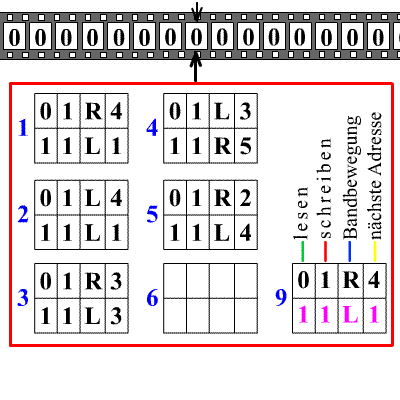
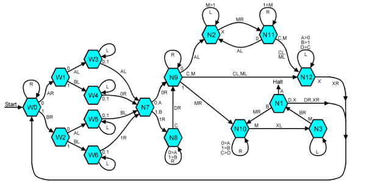
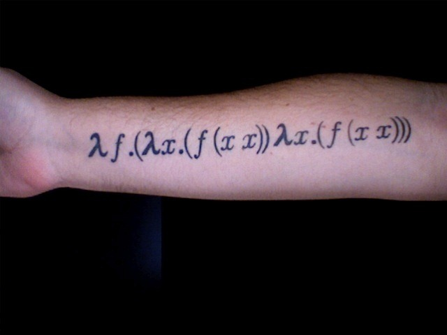

计算的极限（零）：逻辑与图灵机
方弦发表于 2012-07-17 06:45 | Tags标签：原创,哥德尔不完备定理,图灵机,计算的极限
2012，图灵诞辰100周年，献给这位伟大的开拓者。
计算无处不在。
走进一个机房，在服务器排成的一道道墙之间，听着风扇的鼓噪，似乎能嗅出0和1在CPU和内存之间不间断的流动。从算筹算盘，到今天的计算机，我们用作计算的工具终于开始量到质的飞跃。计算机能做的事情越来越多，甚至超越了它们的制造者。上个世纪末，深蓝凭借前所未有的搜索和判断棋局的能力，成为第一台战胜人类国际象棋世界冠军的计算机，但它的胜利仍然仰仗于人类大师赋予的丰富国际象棋知识；而仅仅十余年后，Watson却已经能凭借自己的算法，先“理解”问题，然后有的放矢地在海量的数据库中寻找关联的答案。长此以往，工具将必在更多的方面超越它的制造者。而这一切，都来源于越来越精巧的计算。
计算似乎无所不能，宛如新的上帝。但即使是这位“上帝”，也逃不脱逻辑设定的界限。
第一位发现这一点的，便是图灵。
一切从逻辑开始
1900年的巴黎，在世纪交替之际，希尔伯特提出了他著名的23个问题。其中第二个问题——算术系统的相容性——正是他那雄心勃勃的“希尔伯特计划”的最后一步。这位数学界的巨人，打算让整个数学体系矗立在一个坚实的地基上，一劳永逸地解决所有关于对数学可靠性的种种疑问。一切都为了回答三个问题：
数学是完备的吗？也就是说，面对那些正确的数学陈述，我们是否总能找出一个证明？数学真理是否总能被证明？
数学是一致的吗？也就是说，数学是否前后一致，不会得出某个数学陈述又对又不对的结论？数学是否没有内部矛盾？
数学是可判定的吗？也就是说，能够找到一种方法，仅仅通过机械化的计算，就能判定某个数学陈述是对是错？数学证明能否机械化？
希尔伯特明确提出这三个问题时，已是28年后的1928年。在这28年间，数学界在算术系统的相容性上没有多少进展。但希尔伯特没有等太久，仅仅三年后，哥德尔就得到了前两个问题的答案，尽管这个答案不是希尔伯特所希望看到的。
哥德尔的答案分两部分。
第一，任何包含了算术的数学系统都不可能同时拥有完备性和一致性，也就是说，如果一个数学系统包含了算术的话，要么它是自相矛盾的，要么存在一些命题，它们是真的，但我们却无法证明。这说明，希尔伯特的前两个问题不可能同时为真。在这里，“算术”有着精确的含义，就是皮亚诺公理，一组描述了自然数的公理。
第二，任何包含了算术的数学系统，如果它是一致的，那么我们不能在它的内部证明它本身的一致性。这说明，我们没有希望解决第二个问题。
这就是著名的哥德尔不完备性定理，与其说它回答了希尔伯特的前两个问题，不如说它阐述了为什么我们根本不可能解决这两个问题。
哥德尔的证明非常精巧。他先将所有的数学陈述和证明符号化，然后给每个符号串赋予一个数字，这个过程被称为哥德尔配数法。借助数学归纳法，我们可以建立针对所有自然数的陈述，而这样的陈述本身对应着一个数字，这个数字也符合陈述本身的要求。换言之，这个陈述陈述了它本身的性质。哥德尔正是通过这样魔法般的自指，完成了他的证明。这个证明之所以重要，是因为它第一次提供了一套完整的数学工具和方法，用于证明有关数学证明的不可能性。这本身就是数学的一次重大胜利，说明数学的力量强大得可以用纯粹逻辑的方法，证明它本身的力量是有界限的。在数学的领地上，有些东西我们不知道，也不可能知道。
希尔伯特的前两个问题已经解决，只剩下最后一个问题。然而，如果一个数学系统不完备的话，它显然不可能是可判定的，因为机械化的计算本身也可以看成一种证明，而在一个不完备的系统中，真理不总能被证明。所以，最后一个问题只对完备的数学系统有意义。
所幸，完备的数学系统是存在的。同样是哥德尔，他证明了所谓“一阶谓词演算”的逻辑系统是完备的，这被称为哥德尔完备性定理。一阶谓词演算是一个比较弱的逻辑系统，在其中我们甚至不能有效唯一地描述算术。比如说，自然数系统符合皮亚诺公理的一阶版本，但它并不是唯一的，还有无数种所谓“非标准模型”同样符合这套一阶系统。在一阶谓词演算中，对于一套公理系统，如果一个命题在所有的模型中都正确，那么必定可以形式地证明这个命题，这就是一阶谓词演算的完备性。在一阶谓词演算中，真理总能被证明。
在这个弱得多的逻辑系统中，我们有了完备性，真的命题必定可以被证明。那么，它是不是可判定的？我们能不能找到一种机械计算的方法，判定其中数学陈述的对错？数学称述的真假，是否可判定的？这个问题，就是希尔伯特的可判定性问题。
注：希望更深入了解哥德尔不完备性定理的读者，可以重温旧文《希尔伯特之梦，以及梦的破灭》
复杂的简单机器
在纽曼教授的数理逻辑课上，图灵第一次听到希尔伯特的可判定性问题以及哥德尔不完备性定理。那是1935年的春天，他刚刚完成在剑桥国王学院的四年本科学习，以优异的成绩被选为学院研究员，正准备在数学界大显身手，数理逻辑自然而然吸引了他的兴趣。图灵清楚地意识到，解决可判定性问题的关键，在于对“机械计算”的严格定义。考究希尔伯特的原意，这个词大概意味着“依照一定的有限的步骤，无需计算者的灵感就能完成的计算”，这在没有电子计算机的当时，算是相当有想象力又不失准确的定义。但图灵的想法更为单纯。什么是“机械计算”？机械计算就是一台机器可以完成的计算，这就是图灵的回答。
用机器计算的想法并不新鲜。17世纪的莱布尼兹就曾设想过用机械计算来代替哲学家的思考，而19世纪的Charles Babbage和Ada Lovelace就设计出了功能强大的“分析机”，只可惜Babbage欠缺管理才能，这台超越了时代的机器始终没有完全造好。但图灵需要的机器，跟先驱设想的机器稍有不同。它必须足够简单，简单得显然能造出实物，也可以用一目了然的逻辑公式描述它的行为；它又必须足够复杂，有潜力完成任何机械能完成的计算。图灵要找的，是一种能产生极端复杂行为的简单机器。
这并非易事，但图灵做到了，据说这是他某次长跑过后，在某块草坪上发呆的成果。他设计了一类机器，然后定义“机械计算”为“这类机器可以完成的计算”。他设计的这类机器，正是日后以他名字命名的图灵机。
图灵机的示例。绿点指示处为当前状态，每条规则的4项分别是：当前位置读入的字符、当前位置写入的字符、纸带的移动方向、将要转移到的状态。
图灵机的结构非常简单，它由两部分组成：一个读写头，还有一条两边无限延长的纸带，纸带被划分为小格，每格中只能有0和1两种符号。读写头的限制则稍微宽松一些，虽然每次只能对着纸带上的一个格子，但它本身可以处于不同的状态，虽然状态的数目是有限的。在所有状态中，有一个特殊的“停机”状态，读写头一旦处于停机状态，就会停止运作；但如果读写头一直没有到达停机状态的话，它就会永远运转下去。
整台图灵机的秘密在于读写头的状态转移表，它指示着读写头的状态和当前读写头正对格子的符号如何变化。它只有一种非常简单的规则，就是“如果在状态A的读写头对着符号x，那么对当前格子写入符号y，将纸带左移一格/右移一格/保持不动，然后转移到状态B”。状态转移表就是由一系列这样的简单规则组成的。可以说，状态转移表就相当于图灵机的源代码。
实际上，我们平时笔算乘法的思维过程，跟一台图灵机的运转非常相似：在每个时刻，我们只将注意力集中在一个地方，根据已经读到的信息移动笔尖，在纸上写下符号；而指示我们写什么怎么写的，则是早已背好的九九乘法表，以及简单的加法。如果将一个笔算乘法的人看成一台图灵机，纸带就是用于记录的纸张，读写头就是这个人和他手上的笔，读写头的状态就是大脑的精神状态，而状态转移表则是笔算乘法的规则，包括九九表、列式的方法等等。这种模式似乎也适用于更复杂的机械计算任务。如此看来，图灵机虽然看起来简单，但它足以作为机械计算的定义。
既然图灵机如此简单，能不能将它“升级”，赋予更多的硬件和自由度，使它变得更强大呢？比如说，让它拥有多条纸带和对应的读写头，而纸带上也不再限定两种符号，而是三种四种甚至更多种符号？的确，放宽限制之后，在某种程度上，对于相同的任务我们能设计出更快的图灵机，但从本质上来说，“升级”后的图灵机能完成的任务，原来的图灵机也能完成，虽然也许会慢些。也就是说，这种“升级”在可计算性上并没有意义，放宽限制后的机器能计算的，原来的机器也能完成。既然计算能力没有质的变化，无论采取什么样的结构，用多少种符号，都无所谓。
图灵机的一大优点，就是它的简单。只要给出状态转移表，任何一个人都可以模拟一台图灵机的计算。对工程师而言，在现实中用机械建造一台图灵机也并非什么难事。对于程序员来说，写一个模拟图灵机的简单程序更是不在话下。但如此简单的机器，它又能做什么呢？它真的能充当“机械计算”的定义吗？
所有机器的机器
图灵机非常简单，只要明白了它的运作过程，任何一个受过足够训练的计算机系本科生都可以写出一个模拟图灵机运行的程序。只需输入状态转移表和纸带的输入内容，程序就可以一步一步模拟相应的图灵机在纸带上爬来爬去的过程。对于一些熟悉图形编程的程序员来说，做个模拟动画也问题不大。即使不用计算机，靠人手一步步操作，也是一件小孩子也能完成的事。图灵机就是这么简单的一种机器。
虽然看上去简单，但实际上图灵机能做的事情远远超出一般的想象。只要有足够长的纸带和足够好的耐心，今天的电脑能做的计算，一台精心设计的图灵机也能完成。诀窍在于，电脑中的电路是有限的，电路的状态也是有限的，我们可以用图灵机去模拟电脑中的电路状态。只要有足够长的纸带，那就可以模拟出足够大的寄存器、内存和硬盘；而CPU中的电路，虽然所有可能的状态极其多，但终究是有限的，可以用图灵机模拟，虽然这台图灵机的状态转移表将会有着令人头痛的大小，以及令人偏头痛的复杂程度。但是，从原则上来说，用图灵机模拟一台电脑是完全可能的，虽然每次“读写内存”时，读写头都需要花长得令人咋舌的时间在纸带上来回奔波。
也就是说，从原则上来说，只要配备适当的输入和输出设备，以及极其好的耐心，我们完全可以用图灵机上网、玩游戏甚至执行自己写的程序。特别地，存在一台特定的编写程序专用的图灵机T，我们可以在纸带上写程序，将它输入到T，然后T就能执行这个程序。那么，如果我们将方才本科生写的那个可以模拟任意图灵机运行的程序（暂且把它称为程序P），写在纸带上输入到T中，让T去执行的话，原本的机器T就摇身一变，变成了一台可以根据输入的状态转移表来模拟任何一台图灵机的图灵机。

【乐高玩具版图灵机，图片出处：http://www.cs.cmu.edu/】
更精确地说，因为程序P的长度是有限的，我们可以将它直接写进原来机器的状态转移表，得到一台新的机器UTM。UTM会在纸带上读取两样东西：一台图灵机M的状态转移表的二进制编码，以及作为M的初始输入的纸带数据。然后，UTM会根据M的状态转移表和初始输入数据，在纸带上模拟M的运作过程。换言之，UTM是一台可以模拟任何图灵机的图灵机。它是所有机器的机器，所谓的通用图灵机（Universal Turing Machine）。当然，通用图灵机并不是唯一的，只要一台图灵机能完成根据状态转移表模拟任意图灵机的任务，它就是通用图灵机。
【一台通用图灵机，数据具体格式请参见来源：http://rendell-attic.org/gol/utm/utmprog.htm】
通用图灵机的想法，在如今这个计算机泛滥的时代，似乎并不新鲜。但在图灵的1935年，电子计算机甚至仍未问世，机械计算机还只能执行内设的一套指令。即使是Charles Babbage和Ada Lovelace的超越时代的设想，其中执行外部程序的概念也相当含混不清。在这种历史背景下，要归纳出通用图灵机这个概念，本身就需要极为丰富的想象力，而且这种图灵机是否存在，这是个远非显然的问题。而图灵不仅设想到了这个概念，而且正确地判断出它的存在性，这需要何等非凡的直觉！
但单纯的直觉终究不能令人信服，数学家讲究的是逻辑和证明。而要证明通用图灵机的存在，最直接的方法莫过于直接给出一个通用图灵机的实例。这并不简单，如果读者想尝试一下的话，我建议先尝试构造一个能做二进制加法的图灵机。为了降低难度，可以假设纸带上有第三种符号，表示空白，但即使如此，要构造一个能做加法的图灵机，远比想象中的困难。可想而知，通用图灵机的构造肯定更为复杂繁琐。即使是图灵，他在一开始给出的构造也是有问题的，而这些问题甚至在后来的勘误中也没有成功修正。比构造更麻烦的是证明给出的图灵机的确是一台通用图灵机，在图灵解决希尔伯特可判定性问题的论文中，有关通用图灵机的构造和证明占了相当大的篇幅。这部分非常繁复琐碎，而且其中还有错误，如果细细研读的话，绝对有诱发剧烈偏头痛的危险。
幸运的是，无论细节多么复杂，图灵的想法还是被逻辑学家们接受了。一旦领会到图灵机的能力，接受了通用图灵机的构想，再检查几个能完成基本任务的图灵机之后，大部分数学家都会认为通用图灵机的确存在，尽管他们并不一定会细看图灵的详细构造。而现代电子计算机的发展，更是验证了通用图灵机的存在：每一台电脑都相当于一台通用图灵机。
通用图灵机的存在，从侧面说明了图灵机这个计算模型的强大之处：图灵机作为一类机器，其中一个特例就可以模拟整个类别中的任意一台机器，宛如能折射大千世界的一滴水珠。但在这种强大的背后，隐隐也暗藏着不安定的因素。哥德尔不完备性定理告诉我们，有时候越强大的数学理论，因为能表达的概念太多，甚至连理论的命题和证明都能表达，反而会导致不能被证明的真命题的存在。如果一个系统足以描述它自己，那魔法般的自指将是不可避免的。图灵机如此强大，它的其中一台就可以模拟所有图灵机，会不会导致不能用计算来回答的问题存在呢？
很不凑巧，答案是会。
无法计算的问题
在哥德尔不完备性定理的证明中，哥德尔构造了一个描述了本身不可证明性的自指命题，通过这个命题完成了他的证明。要想照葫芦画瓢的话，那些关于图灵机本身的问题，将会是很好的候补。关于图灵机，最简单的问题是什么呢？回想一下图灵机的运作过程，一台图灵机从初始状态开始，根据纸带上的内容，一边不断变换状态，一边更改纸带的内容，如此往复永无休止，除非它遇上了表示停机的那个状态，才能从这机械的计算过程中跳出，获得静息的安乐。一个自然的问题是：一台图灵机什么时候会停机呢？
更严格地说，会不会停机并不是图灵机本身的属性，它跟纸带的初始输入也有关系。对于同一台图灵机，不同的纸带输入也可能导致不同的结果和行为。比如说，我可以设计一台图灵机，它的任务只有一个：一步一步向右移动，寻找输入中的第一个1。如果输入纸带上全是0的话，那么，这台图灵机自然不会停止；但只要纸带上有一个1，那么它就会停止。所以，真正严谨的问题是：给定一台图灵机M以及一个输入I，如果我们将I输入M，然后让M开始运行，这时M是会不停运转下去，还是会在一段时间后停止？我们将这个问题称为停机问题。
初看起来，停机问题并不难。既然我们有通用图灵机这一强大的武器，那么只需要用它一步步模拟M在输入I上的计算过程就可以了。如果模拟过程在一段时间后停止了，我们当然可以得出“M在输入I上会停止”这个结论。问题是，在模拟过程停止之前，我们不可能知道整个计算过程到底是不会停止，它可能会在3分钟后停止，可能要等上十年八载，更有可能永远都不会停止。换句话说，用模拟的方法，我们只能知道某个程序在某个输入上会停止，但永远不能确定那些不停止的状况。所以说，单纯的模拟是不能解决停机问题的。
实际上，停机问题比我们想象中要复杂得多。
举个例子，我们可以编写一个程序GC，它遍历所有大于等于6的偶数，尝试将这样的偶数分成两个素数的和。如果它遇到一个不能被分解为两个素数之和的偶数，它就停机并输出这个偶数；否则，它就一直运行下去。用现代的工具编写GC这样的程序，对于计算机系的学生最多只能算一次大作业；用图灵机实现的话，也不是什么极端困难的事。然而，GC是否会停止可是牵涉到了哥德巴赫猜想。如果哥德巴赫猜想是正确的，每个大于等于6的偶数都能分解为两个素数之和的话，那么GC自然会一直运行下去，不会停机；如果哥德巴赫猜想是错误的话，必定存在一个最小的反例，它不能分解为两个素数之和，而GC在遇到这个反例时就会停机。也就是说，GC是否永远运行下去，等价于哥德巴赫猜想是否成立。如果我们能判定GC是否会停止，那我们就解决了哥德巴赫猜想。
数学中的很多猜想，比如说3x+1猜想、黎曼猜想等，都可以用类似的方法转化为判断一个程序是否会停止的问题。如果存在一个程序，能判断所有可能的图灵机在所有可能的输入上是否会停止的话，那么只要利用这个程序，我们就能证明一大堆重要的数学猜想。我们可以说，停机问题比所有这些猜想更难更复杂，因为这些困难的数学猜想都不过是一般的停机问题的一个特例。如果停机问题可以被完全解决，我们能写出一个程序来判断任意图灵机是否会停机的话，那么相当多的数学家都要丢饭碗了。
停机问题如此复杂，机械的计算看起来没有足够的力量来完全解决它。停机问题似乎是不可计算的。但要想严格证明这个结论，似乎仍要求助于深藏在图灵机之中，那魔法般的自指。
矛盾的自我指涉
在现实中，证明某种东西不存在是非常困难的。要证明某种东西存在，只要举出一个例子就可以了；但要证明某种东西不存在，就要想办法排除所有的可能性，而在现实生活中，这几乎是不可能的。所以，只要能排除那些比较主要的可能性，任务就算完成。但在数学中，情况大不相同：通过形式逻辑的方法，我们可以确实地证明某种数学对象不存在。这都要归功于数学那彻底的抽象化和形式化。数学家在证明某个数学对象不存在的时候，经常会来一招“欲擒故纵”：首先假设它存在，那么它必然具有某些特定的性质，再利用这些性质，用严密的逻辑推理引出一个不可能的结论。既然结论是不可能的，而逻辑推理又没有问题，那么一定是推理的出发点出了差错：作为推理基础的那个东西，其实并不存在。这种证明方法，就是反证法。
现在，我们尝试用反证法证明停机问题是不可计算的。
按照反证法的格式，我们先反其道而行之，假设停机问题是可以计算的。根据定义，这说明存在一台图灵机P，使得向它输入某个图灵机M的状态转移表编码，以及初始输入I，图灵机P就能在有限步运算内，判断出机器M在输入I上是否会停止。
接下来，我们将要用图灵机P构造一个逻辑上不可能存在的结构，这将是证明的关键。
我们来考虑一个新的图灵机R，它的输入是某个图灵机M的状态转移表编码<M>。图灵机R先“调用”图灵机P，判断图灵机M在初始输入<M>上是否会停止。用现代的计算机语言来说，就相当于调用函数P(<M>,<M>)。如果图灵机P得出的结论是机器M在输入<M>上会停止的话，图灵机R接下来就会进入死循环；否则，如果机器M在输入<M>上不会停机的话，图灵机R就停止。

图灵机R的构造有两个奇怪之处。
首先，在图灵机R的运作中，它尝试判断一台图灵机M在它自身的编码<M>上的运作情况。此时，图灵机M不仅是程序，同时也是数据。这提醒我们，其实程序和数据没有实质的区别。程序只是一种特殊的数据，能够被分析、整理、改写。
事实上，我们每天都在使用处理程序的程序。比如说杀毒软件，其实就是一种扫描程序的程序。它检查每个程序的内容，判断程序中有没有威胁计算机安全的恶意代码。用杀毒软件扫描它自身，实际上就是让这个程序运作在它自身的代码之上。我们也可以用记事本打开记事本的程序本身，或者用压缩软件打一个包含它程序本身的压缩包。这些例子都说明了一个道理：程序就是一种数据。正因为程序就是数据，我们才得以完成图灵机的自我指涉。
其次，在图灵机R的构造中，如果M在输入<M>上停机，那么R就不停机；如果M在输入<M>上不停机，那么R就停机。这就是说谎者悖论的翻版：它的行为要与自己的判断相悖。
这样，我们就凑齐了说谎者悖论的两个要素：自我指涉和自我否定。剩下的，就是如何将这两个要素组合在一起，引出不可调和的矛盾了。
为了引出矛盾，我们来考虑图灵机R在自己的编码<R>上的运行情况。
如果R在<R>上停机的话，R必定没有进入死循环。所以，在调用图灵机P时，得到的必然是“图灵机R在输入<R>上不会停机”，才能避免死循环。但图灵机P的这个结论不符合我们的假设，出现了逻辑矛盾，所以R不可能在<R>上停机。
如果R在<R>上不停机的话，因为图灵机P必定在有限时间内完成计算，所以R必定进入了死循环。而R进入死循环的先决条件是，在调用图灵机P时，得到的是“图灵机R在输入<R>上停机”。而图灵机P的这个结论，同样不符合我们的假设。由于同样的逻辑矛盾，R同样不可能在<R>上不停机。
所以，根据严密的逻辑，我们构造的图灵机R在自己的编码<R>上，既不可能停机又不可能不停机，这是不可能的。另一方面，我们的逻辑推理也是没有问题的。尽管多么不情愿，剩下的可能性只有一种：我们假设的那个能完美解决停机问题的图灵机P，根本不存在！也就是说，停机问题是不可计算的。。

这个结论，我们称之为停机定理。以上的论述，作为停机定理的证明远远不算严谨，还有很多细枝末节需要填充。但这些细节都是技术性的，并不妨碍主要的思想：矛盾的自我指涉。
停机定理的证明，一如哥德尔不完备性定理的证明，核心是化了妆的说谎者悖论。图灵机的能力如此强大，一台通用图灵机就可以完成一切图灵机的工作，将所有图灵机作为数据处理。也正因如此，图灵机不能解决某些牵涉它自身的问题，否则总会存在一些自我否定的“说谎者”，利用能解决牵涉自身问题的那些图灵机，完成被逻辑所禁止的，致命的自我指涉。图灵机的能力，在必然的逻辑推演下，同时也成了它的枷锁。
不可判定的重复
实际上，图灵一开始并没有证明停机定理。他证明的是：不存在这样的程序，能判断任意图灵机是否会至少打印出一个1。这里的“1”可以换成任意的符号。这个证明的方法要稍复杂些，不过本质上仍然是通过自我否定与自我指涉来制造悖论。而事实上，许多（但不是所有）有关图灵机的问题，都能用同样的方法被证明是不可计算的。这样，图灵手上就握有一套不可计算的问题，可以开始进攻希尔伯特的问题。我们回顾一下希尔伯特的问题。哥德尔证明了，所谓的“一阶谓词演算”是完备的。也就是说，在这个数学系统中，每个真理都能被证明，“真”和“能被证明”这两个概念是一致的。希尔伯特的可判定性问题是：是否存在一种计算过程，可以在有限步运算内，判断在这个完备的数学系统中每个命题的真假？
一阶谓词演算作为数学系统，在能力上实在是比不上数学家们常用的逻辑系统：它连自然数都不能很好地定义。但图灵发现，这个稍弱的数学系统已经足以表达图灵机的运行过程。对于每个图灵机M，通过巧妙然而机械化的操作，图灵都能构造出一阶谓词演算中的一个命题U(M)，使得U(M)成立当且仅当图灵机M会至少打印出一个1！也就是说，命题U(M)是否为真与图灵机M的运行过程息息相关。
剩下的证明就如同探囊取物了。如果希尔伯特的可判定性问题是可以计算的话，必定存在一台图灵机H，可以在有限时间内，判断每个命题的真假。对于一台图灵机M，我们要知道它是否会至少打印出一个1，可以先机械化地计算出与M有关的命题U(M)，然后用图灵机H去判断U(M)的真假，从而判断图灵机M是否会至少打印出一个1。也就是说，利用图灵机H，我们可以用计算回答一个不可计算的问题，而这是不可能的。所以，图灵机H并不存在，希尔伯特的可判定性问题的答案只有三个字：不可能。
希尔伯特的期望，又一次化为泡影。逻辑弄人。
图灵确信自己解决了希尔伯特的判定问题后，很快将他的想法写成了论文，它的题目是：
《论可计算数，及其在可判定性问题上的应用》（On Computable Numbers, With an Application to the Entscheidungsproblem）
他将论文交给了数理逻辑课的纽曼教授。这篇论文在纽曼教授的桌上放了几个星期。当教授终于有时间细读图灵的论文时，一开始根本不敢相信希尔伯特的问题竟然能通过对如此简单的机器的论证而解决，但无懈可击的逻辑论证最终战胜了怀疑。这无疑是划时代的工作，最终埋葬了希尔伯特的宏伟计划。
但正当纽曼教授联系各方，想办法发表图灵的论文时，从大西洋彼岸的普林斯顿，寄来了一篇论文：
《初等数论中的一个不可解问题》（An unsolvable problem of elementary number theory）
它的作者是丘奇（Alonzo Church），普林斯顿大学的一位年轻数学教授，当时在数理逻辑这一领域已经小有名气。而这篇文章的最后一句话是：
In particular, if the system of Principia Mathematica be ω-consistent, its Entscheidungsproblem is unsolvable.
（特别地，如果《数学原理》中的系统是ω-一致的话，它的可判定性问题是不可解的。）
对于图灵来说，这绝对不是一个好消息，因为这正是他的结果。
那么，丘奇又是如何得到这个结论的呢？
函数构成的世界
丘奇作为图灵在数学上的前辈，思考的问题自然比图灵要深远得多。图灵考虑的问题，仅仅是希尔伯特的可判定性问题，而丘奇当时思考的，是如何重构数学的基础。
当时正是第三次数学危机勃发之际，数学界各路人马对数学基础应该置于何处争论不休。当时公理化集合论刚刚建立，作为新事物，自然有人持观望态度，而丘奇就是其中一位，他觉得自己可以创造一个更好的理论，以此作为数学的基础。与其选择集合与包含这两个概念，他选择了数学中另一个重要的概念：函数。
数学家眼中的函数，比你想像的要广泛得多。在中学数学中，说到函数，自然会联想起它在平面直角坐标系的图像。这是因为中学数学中的函数，大部分情况下不过是从实数到实数的映射而已。而数学家眼中的函数，可能与程序员眼中的函数更相似：它们更像是一个黑箱，从一边扔进去某个东西，另一边就会吐出来另一个东西。
我们并没有限定能扔进黑箱的东西。事实上，将黑箱本身扔进黑箱也是可以的。对这种把戏，数学家们再熟悉不过了，在泛函分析这一数学分支中，数学家们就经常研究一种叫“算子”的数学概念，在某些特殊情况下，就是那些将一个函数变成另一个函数的函数。所以，不去限定能扔进黑箱的东西，似乎也没什么问题。
总而言之，函数就是将一个函数变成另一个函数的东西。那么，要用符号表达这么普遍的函数概念，我们需要什么呢？
首先，就像在方程中我们用x, y, z等等符号表示未知数，我们也希望能用符号表示未知函数。我们将这些表示未知函数的符号称为变量。
其次，如果我们手上有两个函数M M M 和N N N ，那么我们自然希望研究函数N N N 被函数M M M “处理”之后会变成什么。也就是说，既然M M M 是一个函数，能将一个函数变成另一个函数，那么M M M 会将N N N 这个函数变成什么呢？即使不知道具体的过程，我们也希望能表达最后的结果。所以，我们将N N N 被M M M 处理后得到的结果记为(MN) (MN) (M \, N) 。这被称为函数的应用（application）。
最后，也是最抽象的概念，就是函数的抽象（abstraction）。
我们可以用变量x来表示未知的函数，自然也可以用x来构造更多的函数。比如(xx) (xx) (x \, x) 就表示函数x应用到自己身上的结果，而((xx)y) ((xx)y) ((x \, x) \, y) 就表示将刚才得到的结果应用到另一个未知函数y上得到的结果，如此等等，不一而足。如果我们将变量x替换成一个具体的函数f，那么这些包含变量x的表达式就会变成包含具体函数f的表达式。
也就是说，如果我们有一个包含变量x的表达式M M M ，对于任意一个函数f，我们可以将它对应到一个新的表达式，记作M(f) M(f) M(f) ，而这个新的表达式是将M中的所有x替换成f所得到的。比如说，如果M=(xx) M=(xx) M=(x \, x) ，那么M(f)=(ff) M(f)=(ff) M(f)=(f \, f) ，M((yy))=((yy)(yy)) M((yy))=((yy)(yy)) M((y \, y))=((y \, y) (y \, y)) ，等等。
一个表达式也是一个函数。我们从表达式M出发，可以得到把一个函数f对应到另一个函数M(f) M(f) M(f) 的方法，而这正是一个函数。也就是说，我们能从一个表达式“抽象”出一个函数。我们将这个函数记作λx.M λx.M \lambda x. \, M ，x是我们所要考虑的自由变量。
【注：在这里，我们只能替换那些所谓的“自由变量”。粗略地说，自由变量是那些之前没有被抽象过的变量。详细的技术细节略显繁复，而且也有办法绕过，所以于此略过。】
从这三点基本要求出发，丘奇开始定义他的λ演算。他将他考虑的这些函数称为“λ项”，而所有的λ项都可以从以下三种途径构造而成：
1. （变量）所有变量x,y,z,… x,y,z,… x,\, y,\, z,\, \ldots 都是λ项。
2. （应用）如果M M M 和N N N 都是λ项，那么(MN) (MN) (M \, N) 也是λ项。
3. （抽象）如果M M M 是一个λ项而x是一个变元，那么λx.M λx.M \lambda x. \, M 也是一个λ项。
接下来，丘奇定义了一些λ项之间的转换法则。
首先是α α \alpha 重命名，这项转换可以使我们在遵循一定的规则下，任意变换λ项中的变量名称，而不改变λ项本身的意义。也就是说，λ项中变量的名称无关紧要，无论是x, y, z还是苹果、香蕉、榴莲，又或者是小庄、游游、李清晨，项的本质是不变的。
然后是最重要的β β \beta 规约：
(λx.M)f→ β M[x←f] (λx.M)f→βM[x←f] (\lambda x. \, M) \, f \; \rightarrow_{\beta} \; M[x \leftarrow f]
在这里，M[x←f] M[x←f] M[x \leftarrow f] 实际上是M(f) M(f) M(f) 的严谨记法，表明了我们要替换的变量。而β β \beta 规约实际上就是根据定义计算函数的一个过程。
最后，还有一个η η \eta 变换。它的实质是所谓的外延性，也就是说，如果两个项对所有函数的作用都是相同的话，那么就认为这两个项是相同的。
这么几条简单的法则，就是丘奇的λ演算的全部内容。
那么简单的法则，很难想象λ演算能表达什么复杂的数学概念，这看起来不过是符号的简单推演而已。但既然同样简单的图灵机中也暗藏玄机，那说不定λ演算也有它自己的复杂内涵。
分崩离析的世界
丘奇最初建立λ演算的目的，是希望将它作为一种逻辑推理的方法。我们可以将某些逻辑公理表达为λ项；对于某个逻辑命题，我们可以先将其转化为λ项，再根据λ演算的法则将它不断简化，而命题正确与否就蕴含在计算结果之中。
通过这种方法，丘奇成功地在λ演算的框架下表达了不少的数学系统。λ演算看起来是如此的成功，甚至达到了无所不能的程度。
但如果我们还记得哥德尔的教训的话，无所不能有时并不一定是什么好事，因为在数学和逻辑的领域中，对于有意义的逻辑系统，强大的表达能力必然伴随着坚不可摧的限制。如果一个系统无所不能，那么更大的可能是它本身就自相矛盾。就像一个理论，如果对的也好错的也罢，正面反面都能解释得通，那相当于完全没有解释。
果然，几乎在丘奇向学术界展示他的λ演算的同时，克林（Kleene）和科里（Curry）就证明了，作为一个逻辑推理系统，λ演算在本质上就存在着矛盾，它是不一致的。通过适当地构造一些λ项，克林和罗瑟（Rosser）成功地利用λ演算找到了一切命题的证明，甚至包括那些错误的命题！一个连错误的命题都能证明的逻辑系统，也就是说一个不一致的逻辑系统，没有任何意义。
值得一提的是，上面这几位后来都成为了数理逻辑界的大人物。克林和罗瑟是丘奇的学生，而科里则师从希尔伯特。我们后面还会讲到这位科里教授，他的事迹之一就是有整整三个不同的编程语言是以他的名字命名的，连中间名都用上了，影响力可见一斑。
事实上，丘奇当初在筑建λ演算之时，就已模糊地认识到了这个问题，但他觉得这只是一种幻象，通过某些适当的限制，就能摆脱这些恼人的问题。但丘奇错了，实际上这是一个本质性的问题。
那么，问题的根源在何处？
我想，读过本系列之前文章的读者应该都猜到了，又是那绕不过去的自我指涉！

自指
但是，自我指涉在什么地方呢？
还记得λ项是什么东西呢？它的原型是函数，但不是一般的函数。在定义λ项之时，我们允许它将任意的λ项转化为另一个λ项。既然是任意的λ项，那么当然也包括它自己。如果将λ项看成程序的话，那又是一个可以将自己当作输入数据的程序。与图灵机不同的是，在λ演算之中，根本没有数据和程序之分，一切都是λ项，它们既是程序，也是数据。
λ演算的能力不止于此。考虑所谓的Y组合子：
Y=λx.(λy.x(yy))(λy.x(yy)) Y=λx.(λy.x(yy))(λy.x(yy)) Y = \lambda x. \, (\lambda y. \, x \, (y \, y)) \, (\lambda y. \, x \, (y \, y))
将它应用到任意一个函数$f$时，我们会得到：
Yf=(λx.(λy.x(yy))(λy.x(yy)))f Yf=(λx.(λy.x(yy))(λy.x(yy)))f Y f \; = \; (\lambda x. \, (\lambda y. \, x \, (y \, y)) \, (\lambda y. \, x \, (y \, y))) \, f
→ β (λy.f(yy))(λy.f(yy)) →β(λy.f(yy))(λy.f(yy)) \rightarrow_{\beta} \; (\lambda y. \, f \, (y \, y)) \, (\lambda y. \, f \, (y \, y))
→ β f((λy.f(yy))(λy.f(yy))) →βf((λy.f(yy))(λy.f(yy))) \rightarrow_{\beta} \; f \, ((\lambda y. \, f \, (y \, y)) \, (\lambda y. \, f \, (y \, y)))
=f(Yf) =f(Yf) = \; f \, (Y \, f)
这样不停替换下去，得到的结果就相当于将函数$f$应用到自身任意多次。λ演算的能力，特别是在自我指涉方面，于此可见一斑。
正是如此强大的表达能力，使得作为逻辑系统的λ演算一无所能。如果还记得图灵机是怎么在停机问题上失效的话，实际上利用相似的技巧，对于任意的命题，我们可以构造一个λ演算中的证明，无论命题本身是对是错。
后来Curry的工作在更深刻的意义上揭示了这一点。他概括了λ演算的某些特性，然后证明了对于无论什么逻辑系统，只要它拥有这些特性，那么它必然是不一致的。而这些特性，也恰好是会碍事的那部分自我指涉所需要的。
于是，作为一个逻辑模型，λ演算一败涂地。
但丘奇没有就此止步。虽然λ演算不能如他所愿成为数学的推理基础，作为一个计算模型似乎倒也不错。我们可以将一个计算过程看成函数，将输入数据转化为输出数据的函数。于是丘奇将“可有效计算”定义为“可以用λ演算表达的函数”。这时，自我指涉的特性就成为了不可多得的优点，因为这实际上说明λ演算有强大的计算能力。利用自我指涉的特性，通过相似的构造方法，丘奇同样解决了希尔伯特的可判定性问题，得到了与图灵相同的结论。
丘奇在构想λ演算之时，瞄准的是更为基本的数学基础模型，但它却成为了可计算性的模型，真可谓“无心插柳柳成荫”。这就是图灵看到的那篇论文的由来。
不难想象图灵当时读到这篇论文时的心情。如果将数学比作攀山，当你千辛万苦登上一座处女峰，却蓦然发现山顶已经插上了别人的旗帜，你大概会觉得一切都似乎失去了意义。
但数学毕竟不是攀山，不同的路径可能有不同的景致，要论高下为时尚早。况且要比较两者，要先知道两者解决的到底是不是同一个问题。虽然图灵和丘奇解决的都是同一个问题，但他们对“可计算性”各自做了不同的假定。图灵认为“可计算的问题”就是图灵机可以解决的问题，而丘奇则认为那应该是λ演算可以解决的问题。
问题是，图灵机和λ演算这两个计算模型，它们解决问题的能力一样吗？两种视点下的可计算性，到底是殊途同归，还是貌合神离？
殊途同归
大洋彼岸寄来的论文，对于图灵来说，并不是什么好消息。在看到丘奇的论文后，图灵有过何等反应，至今恐怕已不可考。面对着一位在数理逻辑方面已然小有名气的职业数学家，与自己一起独立发现了相同的突破性结果。往好处想，这说明图灵自己的水平已经达到了当时数理逻辑研究的前沿；往坏处想，重复了别人的结果，哪怕是独立发现的，似乎都有些不对味儿。
然而，在下定论之前，图灵还有一件事情要搞清楚。他和丘奇对“可计算性”的定义，分别建筑在图灵机与λ演算之上。那么，在不同的基础上定义的两种“可计算性”，是貌合神离还是本为一体？
图灵机与λ演算，两者似乎都在平平无奇中暗藏玄机。作为计算模型，它们有很多相似之处，比如自我指涉的能力。但它们看起来又是如此不同，图灵机是一台在工程上能建造的机器，而λ演算则是一个彻头彻尾的数学模型。看起来，要回答这个问题，并非易事。
图灵知道，丘奇也知道，他们已经踏入了一个新领域。昔日希尔伯特在他的二十三个问题中，一语带过的那个“机械化的运算”，即将被赋予精确的数学含义。但正因如此，踏出的第一步必须慎之又慎，尤其对于“可计算性”这个最基础的定义，必须做到毫不含糊。为此，为了消除模棱两可之处，图灵机与λ演算是否能力相当，这是个必须回答的问题。
知己知彼，百战不殆。为了解答这个问题，图灵开始钻研λ演算，试图弄清到底λ演算能计算什么。终于，他证明了，所有λ演算能计算的函数，他的图灵机也能计算，反之亦然。也就是说，λ演算与图灵机的计算能力是等价的，两种模型定义的“可计算性”实际上殊途同归。他将这个结果作为附录补充到了他的论文。
对于图灵来说，这既是个坏消息，也是个好消息。坏消息是，他的结果与丘奇的重复了，对于发表文章来说，这不是什么好事情。好消息是，他的结果与丘奇的重复了，但他对可计算性的定义与丘奇的截然不同，而且两种看似毫无关系的定义，在实质上是相同的，这说明，他们对可计算性的定义，这最初的一步踏出的方向是正确的。一个人提出的定义很可能忽视某个方面，但现在两个截然不同的定义引向相同的结果，在交叉印证下，几无出错之虞。
可以说，图灵的工作面世之日，正是可计算性理论呱呱坠地之时。
也难怪纽曼教授一开始不相信图灵的工作。仅仅二十出头，刚刚踏入科学界的年轻人，就解决了如此重要的问题，而且为一个全新的领域立下了奠基石，这种人，即使在剑桥这个英国顶尖学府，也可谓难得一见。倒不如说，一开始不相信，这才是正常的反应。
但即便不相信，数学证明就是证明。即使纽曼教授并不专精于数理逻辑，还是能看出图灵论文的过人之处。他决定为图灵争取发表的机会。
这并非易事。因为从结论上说，图灵重复了丘奇的结果，所以最初联系的几个期刊的编辑都婉拒了纽曼的要求：他们只看到了论文的结论，没看到论文的精髓。最后，纽曼找到了当时伦敦皇家学会学报的编辑，经过三催四劝，终于说服编辑发表图灵的文章。
《论可计算数，及其在可判定性问题上的应用》，图灵的这篇文章，后来被认为是伦敦皇家学会学报发表过的最重要的文章之一。
万变之宗
乘着远洋货轮，图灵的论文很快传到了大洋彼岸，在普林斯顿掀起了一阵旋风。
在普林斯顿高等研究院的哥德尔，与丘奇有过不少碰面的机会。他读过丘奇的论文，大概也听过丘奇本人介绍他的λ演算。但哥德尔对λ演算一直颇有微词。实际上，作为一种计算模型，λ演算从未得到他的认可。它与人们日常接触到的“计算”毫无相似之处，更像是符号的堆砌和推演。虽然其中的计算的确可以机械性地完成，但要证明这一点绝非易事。事实上，这是一个远非显然的定理，证明也相当复杂。总而言之，λ演算并不像机械的计算，更像智慧的推理。
实际上，哥德尔自己也有一套“机械计算”的模型，那正是他在证明哥德尔不完备性定理时发展出来的递归函数体系。这套体系将“机械计算”定义为递归函数能计算的内容，而递归函数，顾名思义，就是可以用某些递归方式定义的整数函数。但哥德尔对他自己的模型同样不满意，原因同样是他的模型似乎需要太多的聪明才智，不像一台机器。
但图灵的论文瞬间就令哥德尔为之折服。
任何人，只要看一眼图灵机的定义，都会认同图灵机的计算完全是机械演算，完全可以造出一台可以运作的实际的图灵机。而更重要的是，图灵机抓住了“机械计算”的神韵。
机械计算是什么？是机器可以做出的计算。但机器可以千奇百怪，要用三言两语抓住本质，似乎不太可能。那么，何不反其道而行之？与其想像这些机器共有的特性，不如寻找它们共有的限制。
这正是图灵在论文中的做法。他总结了以下几个机器计算的限制：
第一：一台机器只有有限个可以分辨的状态；一台机器能分辨的表示数据的符号只有有限种。
开关或开或合，电路或通或断，中间的变化是跳跃式的。即使是连续的电信号，由于不可避免的热噪声影响，通过测量能分辨出的状态同样只有有限个。虽然现代的计算机看似有无限可能，但这只是幻觉。CPU和内存中的电路，数量虽然庞大无比，但总归是有限的，它们的通断形成的不同状态亦是如此。同理，虽然符号、信号在细节上可以有无数种变化，但由于精度等问题，即使是人，也无法事无巨细将所有细节一一分辨出来，更何况机器。
第二：机器的每一步操作需要的时间有一个下限，而每次操作最多只能读入与改写外部有限个符号。在某次操作读写某处的符号后，下一步机器读写的符号与之前符号的距离应该是有界的。
由于物理的限制，不存在速度无限的物体。无论任何机器，都不能在有限的时间内作出无限次操作，当然也不可能有无限次读入与改写。同样，读写头移动的速度是有限的，所以两次操作读写符号的距离当然也有限制。
第三：在某步操作中，机器的行动完全取决于它当时的内部状态以及读取到的符号。
机器就是机器，它应该做的，就是按照预先规划的图纸一步一步执行。没有异想天开，没有灵光一现，只有照章办事，只有步步为营。
这几个限制看起来相当合理，甚至显得理所当然。但就从如此平平无奇的限制出发，图灵用缜密的逻辑说明了，一台服从这些限制的机器能计算的问题，必定可以用一台特定的图灵机解决。也就是说，任何一台服从这些限制的机器，无论设计如何精巧，构成如何复杂，它的计算能力都不可能超越图灵机，无一例外。
我们甚至可以说，图灵机的设计本身，正是这些限制的一种体现。图灵很可能一开始就意识到了这些限制，再由此出发，去定义他的图灵机。哥德尔之所以对图灵机击节叹赏，大概也正因蕴含在它定义中的，图灵对“机械计算”的深刻洞察。相比之下，虽然与之等价的λ演算也尚算精致，但对于“机械计算”只得其形未得其神，显然逊色不少。
现在，希尔伯特在他的问题中那模糊的“机械计算”，终于有了一个精确的定义：机械计算，就是图灵机能做的计算。这又被称为图灵-丘奇论题，正是可计算性理论的奠基石。
除了λ演算与递归函数以外，还有许多计算系统与图灵机等价。波斯特对应问题，计数器机，马尔可夫算法，甚至元胞自动机，这些计算模型都与图灵机等价。但以我们的后见之明来看，图灵机仍然是机械计算最自然最有用的模型之一。
也正因这篇论文，图灵得到了到普林斯顿读博深造的机会，在丘奇的指导下，得以继续探索可计算性的无限可能。在大洋彼岸等待图灵的，又是可计算性理论的一篇新章。
难料的世事
美国普林斯顿大学，1936年9月底。
离乡别井，总是一种冒险。即使是一衣带水的英国与美国，文化与传统上的微妙差异，不知制造了多少惶惑。而图灵这时来到普林斯顿，可以说是双重冒险。他刚申请了普林斯顿的奖学金，但却受不了漫长的等待：精英荟萃的普林斯顿实在太诱人了。虽然图灵当时已是剑桥国王学院的研究员，每年有一笔比上不足比下有余的薪金，但人在他乡，经济上需要更多余裕。多申请一笔普林斯顿的奖学金，自然也合乎常理。
但图灵没有拿到这笔奖学金。
在现在看来，这是件不可思议的事：即使是可计算性理论的奠基人，在这笔奖学金上竟然都得不到普林斯顿的青睐。但从当时的情况来看，图灵的遭遇又很合情合理。当时他只是一名小研究员，在学术上名气不大，论文也不多。即使关于图灵机的论文是可计算性理论的奠基石，但脱胎于逻辑的这个领域仍需时间洗练。没有人能参透未来，所以普林斯顿只能从现实角度考虑，而这个考虑的结果，就是拒绝图灵的申请。
但即使没有奖学金，普林斯顿对图灵来说，依然有着相当的吸引力。当时普林斯顿大学数学系与高等研究院共用一幢大楼，可谓人才济济。单在数理逻辑，丘奇自不用提，丘奇的学生克林（Kleene）和罗瑟（Rosser）也是一等一的好手，就连前文反复提到的哥德尔，在一年前访问过普林斯顿，而且计划再次访问。当时在普林斯顿的学者常常开这样的玩笑：如果希望瞻仰数学界的某位领头羊，只要呆在普林斯顿就好，他们总会过来的。人才与人才是相互吸引的，图灵选择冒险，自然有他的理由。
可惜人算不如天算。克林与罗瑟刚刚拿到博士学位，在外校取得了一席教职，已经离开了普林斯顿。哥德尔下一次访问要等到1939年。当时普林斯顿在可计算性理论上能拿得出手的，大概就只有丘奇。丘奇的λ演算在日后同样枝繁叶茂，但那将是本系列的另一个故事。
然而，丘奇的研究方式与图灵格格不入，他追求一切概念的严谨与形式化，甚至到达了难以容忍任何模糊描述的地步。从丘奇和图灵各自提出的可计算性的模型，也能看出二人研究风格的差异。丘奇的λ演算从模型本身的描述开始就充满了一种严谨精确、不可更改的气度，如同数学王国中又一块晶莹璀璨的宝石，可望而不可即；而图灵的图灵机则更为灵动直观，似乎在机械工房中就能找到它的身影，每个人都能明白它的原理。
可以想象这两种迥异的研究风格相遇时必然产生的矛盾。当年二人如何合作研究，在今天剩下的文件中只能窥见一鳞半爪，细节已然遗失于历史的尘埃之中。但从图灵的信件可以推测，他们一开始的合作并不顺利。尽管丘奇为人友善，尽管图灵勤勤恳恳，尽管二人都可以说是数理逻辑领域中的佼佼者，但他们首次合作并没有产生什么成果。当然，数学研究就是这样，失败才是正常情况，甚至可以说，数学研究就是在不断的失败上前进的。
幸而，图灵在数学上的兴趣不仅限于数理逻辑。从冯·诺依曼听来的一个有关群论的问题引起了图灵的兴趣，他很快就解决了这个问题，令冯·诺依曼对他大加青眼。也幸亏有了这个群论问题，图灵在普林斯顿的第一年不算颗粒无收。
但图灵最希望做的，还是有关数理逻辑的问题，他希望继续留在普林斯顿，跟随丘奇继续研究，虽然剑桥也有着强烈的吸引力。在再三的劝说后，他又申请了第二年的奖学金。这次，因为有冯·诺依曼的保荐，结果毫无悬念。
值得玩味的是，冯·诺依曼的信中只字未提图灵在数理逻辑方面的成就。但以后见之明看来，图灵在可计算性理论上的工作，远远比他在群论上的工作意义重大而深远。此中对比，意味深长。然而我们不能说奖学金的管理者做错了什么，只能说他们错失了一段佳话。
图灵在普林斯顿的生活踏入第二年。作为博士导师的丘奇，向图灵提出了一个新的题目：探求超越哥德尔不完备性定理的方法。
图灵再次抓住了这个机遇。
一致的扩充
哥德尔的不完备性定理（参见希尔伯特之梦，以及梦的破灭以及计算的极限（零）），其实描述的就是数学本身的界限。在此之前，数学家认为真理必可达到，而希尔伯特的那句“我们必须知道，我们必将知道”，正是这项信念奏出的最强音。但哥德尔打破了这种幻想，他证明了，对于强得足以包含算术而又不自相矛盾的数学系统而言，“真”与“可证明”是两个彻底不同的概念。在这些系统中，存在着无法证明的真理。
哥德尔的不完备性定理有两条。
第一，一个“合适的”包含了算术系统的数学系统不可能同时是一致和完备的，也就是说，如果它没有自相矛盾，那么必定存在这样的命题，它们是真的，但无法证明。
第二，在这样的系统中，我们可以将“系统本身没有自相矛盾”表述为系统中的一个命题，而这个命题正是一个无法被证明的真命题。假设我们有一个包含算术系统，但又没有自相矛盾的数学系统T T T ，我们将表达“T T T 没有自相矛盾”的命题记作Cons(T) Cons(T) Cons(T) ，那么，哥德尔的第二不完备性定理说的就是Con(T) Con(T) Con(T) 在T T T 中无法被证明。
你可能会有这样的疑问：如果把Cons(T) Cons(T) Cons(T) 当作一条公理加进T T T 中，那么得到的新系统不就能证明T T T 没有自相矛盾了吗？这是否与哥德尔的定理矛盾？
但如果将Cons(T) Cons(T) Cons(T) 作为新的公理，我们研究的公理系统就不再是T T T ，而是另一个系统T 1 =T∪{Cons(T)} T1=T∪{Cons(T)} T_1 = T \cup \{Cons(T)\} 。虽然在新的系统T 1 T1 T_1 中的确能证明Cons(T) Cons(T) Cons(T) ，但它只表达了原有系统T T T 没有自相矛盾，而对于新系统T 1 T1 T_1 ，它不能表达这一点。结合了新的公理之后，表达系统本身没有自相矛盾的命题同样会产生变化。这就像一场猫捉老鼠的游戏，我们自以为封死了一切退路，把猎物逼进了墙角，但事实却是按下葫芦浮起瓢，在我们不知道的地方又出现了新的漏洞，狡猾的猎物得以全身而退。
值得一提的是，这种对公理系统的扩充方法有其独特之处：虽然新的系统比原来多了一条公理，阐述了原有体系的一致性，的确使公理系统变得更强大，但在某种意义上，这又是最保守的扩充方法。它仅仅假定了原有系统的一致性，看似没有引入什么新的知识，而得出的新系统的一致性也与原来的系统相同：如果原有系统是一致无矛盾的，阐述这一点的新公理自然不会引发矛盾；而如果原有系统本身就存在矛盾，那么它能证明一切命题，无论是真是假，那么加入新的公理也不会改变这一点。
这可能不是最有趣的扩充方法，但却是最稳妥的。如果随便添加公理，我们得到的更有可能得到的是一个自相矛盾的无用系统。与其矛盾，不如稳健。
但要用这种方法在系统内部证明自身的一致性，实际上并不可行。的确，我们可以多次重复添加公理的过程，得到从T_1、T_2开始的一系列理论系统，但它们的一致性是相同的，都依赖于起始的数学系统T，而且这一点是可以证明的。既然在起始的系统中不能证明自身的一致性，那么之后的一系列系统，无论重复多少次，都不可能证明自身的一致性。
那么，如果我们重复无限次，添加无限条公理呢？这样的话，无论使用了多少条公理，总有比它们更大的一条公理将会断言前面公理的一致性，一环扣一环，直至无穷，整个系统岂不是无懈可击？
系统的证明
从某个理论T 0 =T T0=T T_0 = T 开始，逐次添加关于新理论一致性的公理Cons(T i ) Cons(Ti) Cons(T_i) ，不断得到T 1 =T 0 +Cons(T 0 ),T 2 =T 1 +Cons(T 1 ),T 3 ,… T1=T0+Cons(T0),T2=T1+Cons(T1),T3,… T_1 = T_0 + Cons(T_0), T_2 = T_1 + Cons(T_1), T_3, \ldots ，一直到最后包含无穷条公理的T ∞ T∞ T_\infty ，其中每一条公理都有更大的公理来断言它的一致性。似乎我们就得到了一个超越哥德尔不完备性定理的数学系统。
但事情当然不会那么顺利。
首先，在包含无穷条公理的数学系统中，如何在系统内部谈论它的一致性，这并非顺理成章。的确，从理论上来说，包含任意的无穷条公理的数学系统是存在的。但如果要在这种系统内思考，很快就会遇到困境。先不说在系统中进行推理，就算是阅读一个证明，也并非显然。要理解这一点，需要对“形式证明”有更具体的理解。
一个数学系统内的形式证明，实际上是一串有限的命题组合，其中的命题要么是系统内的公理，要么是此前命题明白无误的简单逻辑推论，而最后出现的命题就是这个形式证明要得出的结论，也就是要证明的定理。这种一环套一环的组合方式，恰好保证了最后结论的正确性。而我们在阅读一个形式证明时，也只需要顺次检查这些命题，看看每一个命题是否本身就是公理或者此前命题的推论，就能验证这个证明的正确性。
而如果要在系统内部用命题表达系统本身的一致性，就要用到哥德尔在证明他的不完备性定理时用到的技术。简单来说，我们需要“阅读证明”的这个过程能够完全机械化，即使将人脑换成图灵机，也可以完成类似的验证。但如果数学系统本身包含无穷条公理的话，这个机械的阅读过程可能甚至连第一步都无法开始：如果有无穷条公理，那么面对一个命题，又如何知道它是否一个公理呢？
打个比方，数学系统好比是座仓库，里边装的都是公理。现在有人给我们一件东西，比如说一本书，我们的任务则是查看仓库里是否有一模一样的存货。如果仓库里只有有限样东西，一个个清点总能完成任务；但如果仓库容纳了无数物件，即使仓库的确有相应的存货，如果清点的次序不当，也有可能永远也碰不上我们的目标。
同样，要判断某个命题是否给定的数学系统中的公理，如果公理只有有限条，那么一个一个比较，总能在有限时间内判断出来。但对于无穷条公理的情况，这种方法有着严重的缺陷。如果检查的命题的确是公理，那么有朝一日总会停止；但反过来，如果我们检查了很久，仍然没有找到它是公理的证据的话，因为我们没有清点公理的一般方法，所以同样无法断言是否有遗漏。
所以一般而言，在一个包含无穷条公理的数学系统中，我们甚至无法在有限时间内机械地判断一个证明是否正确。尽管形式上仍然可以对形式证明进行定义，但我们几乎无法有效地考察这样的定义。同样，在这类系统中，有关形式证明的概念，尤其是系统本身的一致性，也如同处于矛盾中的说谎者，根本无法被表达。在这些系统中，难以谈及有关证明论的问题。
然而，在数学家们平常使用的数学系统中，不乏包含无穷条公理的例子。其中包括策梅洛-弗兰克公理系统，它被认为是现代数学的公认基础；还有皮亚诺算术的一阶逻辑版本，这个版本在数理逻辑的研究中经常出现。虽然这些系统同样包含无穷条公理，但数学家们在使用这些系统进行证明时没有一丝的踌躇，似乎其中形式证明的意义理所当然，与我们之前的结论背道而驰，这又是为什么呢？
答案很简单：这些数学系统拥有特殊的性质，虽然包括无穷条公理，却能在有限的时间内判断某个命题是否其中的公理。在数理逻辑中，这些系统被称为可有效生成的公理系统。
“可有效生成的公理系统”，顾名思义，这种系统里的公理都是可以“有效生成”的，也就是说，存在一台图灵机，可以“生成”所有的公理，将它们一一打印到纸带上，而打印出来的命题则必定是系统中的公理。可以说，这样的公理系统可以约化为一台图灵机。
回到仓库的比喻的话，一个可有效生成的数学系统同样是公理的仓库，但其中有着某种规律。比如一个包揽全世界所有书的仓库（它的别名叫图书馆），要判断某样物品是否有存货就太简单了：只要是书，那就有存货；如果不是书，那就没有。无需费力找到具体的对应，但同样可以确定仓库中是否存在相同的存货。
如果一个数学系统是可有效生成的，那么可以构造一个图灵机来判断某个证明是否正确。它能仅仅承认那些系统内正确的证明，对于错误的证明则一律拒绝。那么，即使有无穷条公理，我们仍然能通过这台图灵机考察关于形式证明的性质，从而可以谈论所有有关证明论的问题，包括我们关心的系统一致性。
而我们希望讨论的扩充系统，也就是通过无穷次扩充得到的数学系统，的确是一个可有效生成的系统。所以，我们对它一致性的讨论是有意义的。
对于读者来说，可能会感觉这些围绕着无穷条公理的讨论仅仅是一种吹毛求疵。但对于数学，特别是数理逻辑而言，精确性无比重要。在日常生活中，我们使用的语言太模糊太杂乱，人们的本意常常迷失在语言当中，有时连人本身都不理解口中的言说。但在数理逻辑中，一切含糊都被符号明晰，没有歧义，没有矛盾，对就是对，错就是错。这种确定性，正是数学真理性的所在。
有限的障壁
无限扩充得到的公理系统T ∞ T∞ T_\infty ，虽然能在其中表达系统本身的一致性，但它的一致性却不像我们想象中的那么显然。虽然对于其中的每一条新公理Cons(T k ) Cons(Tk) Cons(T_k) ，都有比它更强大的另一条公理Cons(T k+1 ) Cons(Tk+1) Cons(T_{k+1}) 保证它的一致性，但这真的能证明包含无数条新公理的系统是一致无矛盾的吗？
我们重温一下一致性的定义：一个公理系统是一致无矛盾的，当且仅当系统中不存在对于假命题的证明。也就是说，无论系统有多大有多复杂，只要系统本身不能证明任意一个假命题，比如说“1=2”，那么这个系统就是一致的。
我们现在尝试考虑无限扩充得到的公理系统T ∞ T∞ T_\infty 。要超越哥德尔不完备性定理，就需要在系统内部证明有关系统本身一致性的命题Cons(T ∞ ) Cons(T∞) Cons(T_\infty) 。假设系统中存在一个这样的形式证明P P P ，这意味着什么呢？
我们知道，形式证明的长度是有限的，毕竟无论是人类还是计算机，都无法完整阅读无限长的证明。所以，证明P P P 用到的公理也只有有限条。既然有限，那么其中形如Cons(T k ) Cons(Tk) Cons(T_k) 的公理也有限，对应的k k k 必然有一个最大值，不妨设为N N N 。那么，证明P P P 中的所有公理，在更小的系统T N+1 TN+1 T_{N+1} 中早已存在，所以证明P P P 在T N+1 TN+1 T_{N+1} 中同样有效。也就是说，仅仅在T N+1 TN+1 T_{N+1} 中就可以证明T ∞ T∞ T_{\infty} 的一致性，它也蕴含了更小的系统T N+1 TN+1 T_{N+1} 的一致性。
也就是说，因为形式证明的长度是有限的，如果无限扩充后的系统T ∞ T∞ T_\infty 能超越不完备性定理，证明它自身的一致性，那么在之前有限次扩充中，必然已经存在一个系统，它能证明自身的一致性。根据之前的论述，这也表示一开始的出发点——也就是系统T T T ——也能证明自身的一致性，而这是不可能的。
尽管我们尝试用无限来突破不完备性定理，但名为“有限”的障壁挡住了我们的去路。
在某种意义上，我们能够处理的，只有“有限”，而无法处理真正的“无限”。那些我们看似能抓住的“无限”，实际上也只是通过某种“有限”的手段确立的。而在“无限”的海洋中，我们无法辨别的，远多于我们能认识到的。
我们无法认识一切，相对地，我们永远有着等待探索的世界。
既然从一致性的方向无法突破，那么从另一个方向呢？哥德尔不完备性定理断言，对于合适的数学系统而言，一致性与完备性是两立的，那么，是否可以不停地扩充系统，在保证一致性的前提下，使它能证明越来越多的命题呢？最后又是否能得到一个完备的系统，在其中可以证明所有真命题呢？
为了回答这个问题，图灵将眼光投向了无穷的彼岸。
从点集开始
为了超越哥德尔不完备性定理，为了获得一个既不自相矛盾又能证明其中一切真理的数学系统，图灵需要从皮亚诺公理开始，一次又一次地添加新的公理，得到越来越大的数学系统。但无论添加多少次，在获得的系统中，一致性与完备性仍然不可两立，即使添加无穷条公理，也无法跨越“有限”所设置的障壁。要达到原本的目的，图灵必须尝试添加更多的公理。但既然已经添加了无限条新公理，新的公理还会起作用吗？又要怎么去描述“无穷之后”的新公理？“无穷之后”又是什么？
无独有偶，在大约五十年前的十九世纪80年代，另一位数学家也碰到了类似的问题，而他的工作正好给图灵提供了描述“无穷之后”的语言。
这位数学家叫格奥尔格·康托尔，集合论之父。
虽然康托尔最大的贡献是为集合论奠基，但他科研生涯的起点与集合论相去甚远。他师从库默尔和魏尔斯特拉斯，博士论文的题目自然也是与数论相关。让他转向集合论研究的关键人物，是爱德华·海涅（Eduard Heine），一位专攻数学分析的数学家。康托尔博士毕业后不久，就在德国的哈雷大学找到了一份教职，而他的新同事中就有海涅。正是海涅鼓励康托尔研究有关三角级数的问题，他对康托尔提出了这样一个问题：什么样的函数拥有唯一的三角级数表达？
三角级数，顾名思义，是由正弦和余弦这些三角函数组成的级数。无论是正弦还是余弦，它们的图像都如同周期性的波纹，而实际上它们也的确描绘了各种各样的简谐振动。在数学上而言，它们是一些特别简单的周期函数，有着特别美妙的特性。但现实往往是复杂的，在工程中，为了实际应用，我们常常逼切地需要计算与工程中出现的函数有关的各种数量和性质。但这些来源于现实的一般函数，几乎不存在任何规律，同样缺乏任何可资利用的特性。于是，如何借助简单而规则的三角函数，来表达复杂而无序的一般函数，这自然同时吸引了数学家、物理学家与工程师。
三角级数正滥觞于此。在1822年，法国数学家傅里叶在他的著作《热的解析理论》中，为了研究热传导的现象，将热量的分布函数分解为三角函数的级数和，并且提出一个构想：所有函数都能表达为三角级数。
当然，事情并没有那么简单。尽管现实中遇到的函数（连续函数）都拥有这样的表达，但对于更为复杂的函数，这却不一定成立。另外一个问题是，对于任意的一个函数，尽管都可以通过傅里叶变换得到对应的三角级数，但谁也不知道会不会有另外一个三角级数也会给出同样的函数。也就是说，虽然通过傅里叶变换，可以知道必定存在一般函数的三角级数表达，但这种表达是否唯一，却并非显然。
康托尔一开始希望解决的，就是这个问题。
凡事总得一步一步来。在1870年，康托尔证明了某个区间上的连续函数必定有唯一的三角级数表达，后来又证明了，即使函数在区间中的有限个点处不连续，也不影响这种表达的唯一性。最后，他在1872年证明了一个非常广泛而复杂的结论：如果函数在区间上大体是连续的，只有在某个点集P上的点不连续，那么如果P满足某个复杂的性质，那么函数就有唯一的三角级数表达。
而正是这个“复杂的性质”，向康托尔暗示了无穷之外另有洞天。
对于任意的点集P，我们可以构造另一个点集P'，它包含所有可以用P中的点无限逼近的点。用数学的术语来说，点集P中的某一点p在P'中，当且仅当对于任意小的距离e，都存在P中不同于p但与p距离小于e的点。既然e可以要多小有多小，这也就是说可以用P中的其他点无穷逼近我们所考虑的点p。这样构造出来的点集P'，又叫P的导集。导集P'本身也是点集，所以它同样有自己的导集，记作P''。导集的导集也有自己的导集，如此反复，直至无穷。我们可以将P取n次导集操作后的结果记为P (n) P(n) P^{(n)} 。
容易知道，一个点集的导集必定是点集的一个子集。实际上，从不太严谨的观点来看，求导集这一操作可以看作一个将点集中那些“离散”的点，也就是那些与所有其他点“保持某个距离”的孤零零的点（或者叫孤立点），从点集中去掉的操作。在一次又一次求导集的操作中，由于我们不停地去掉孤立点，可能会有新的点因为我们除去了它的所有“邻居”而变为新的孤立点，所以多次求导集并非没有意义。
导集的定义并不直观，它的性质也相当复杂。对于一个只有有限个点的点集来说，它的导集必然是空集；而对于一个区间来说，它的导集就是它本身；由数列0.1, 0.01, 0.001, ...组成的点集，它的导集就是仅仅包含0一个点的集合，它的二次导集就是空集。给定一个正整数n，通过一点点思考，再加上一点点数学分析的知识，很容易构造这样的集合，在求它的逐次导集时，前n次得到的都不是空集，最后第n+1次得到的才是空集。有兴趣的读者可以自己尝试构造一下。
而康托尔的定理中所谓“复杂的性质”，就是上述的性质：如果对于一个点集P，我们对它进行逐次求导集后，在有限次操作后能得到空集，那么即使函数在其上不连续，只要在区间的其它地方都连续，那么它就必然有唯一的三角级数表示。
当然，也有一些集合，无论求多少次的导集，也不会得到空集。但康托尔发现，如果恰当地定义集合的“极限”，那么可以通过有限次求出的导集定义“无限次”的导集，记为P (ω) P(ω) P^{(\omega)} 。之所以用ω，大概是因为这是最后一个希腊字母，代表着终结，正适合“无限”这个概念。
那么，这个挂上“终结”标签的无穷次导集，是否的确是导集这个操作的终结呢？按理说，已经进行了无穷次的导集操作，再操作一次也是无限次，同样无限次的操作，应该只会得到相同的结果。但康托尔发现了一些违背我们期望的集合，即使取了无穷次的导集，得到的结果仍然存在着孤立点，可以通过再次取导集除去。这到底意味着什么？
这一定意味着，我们并没有完全理解无穷。但康托尔的观点甚至更加激进：他认为我们连自然数都没有理解透彻！
数量与顺序
回想我们清点物品，比如说桌子上的书，又或者盒子中的巧克力时，我们到底干了些什么？我们指着一个物体，说一声“一”，又指着另一个物品，说一声“二”，再指着又一个物品，说一声“三”。在这里，“一”、“二”、“三”到底代表什么？最自然的解释是，因为我们正在清点，所以这些数字代表的就是我们清点过的物品的数量。另一种同样自然的解释是，这些数字代表我们清点的次序，“一”就是第一个物品，“二”就是第二个，如此类推。
也就是说，我们平时使用的自然数，实际上有数量与顺序的双重意义。在清点时，我们指着一个物品说“五”，实际上说了两件事情，一是之前一共清点了五件物品，二是现在指着的物品是第五件。对于任何一个自然数，这两重意义总是同时出现，难以分割，所以我们自然难以察觉到，在喃喃自语清点物品时，我们口中说出的每一个数字，实际上都有着双重的含义，而这两种含义实际上是完全不同的。
而康托尔的洞见之一，就是对于无穷而言，这双重的含义不再重合，也不再同时出现在同一个“数字”上。本来数量与顺序就是两种截然不同的东西，两种含义不同才自然。
同样一堆物品，可以有许多不同的清点顺序。比如说光的三原色，可以是红蓝绿，也可以是蓝红绿，还可以是红绿蓝。对于清点顺序的唯一要求，就是对于任意两个物品，清点的时候总是能分出个先后，而且要求有一个物品是“第一次被清点”的，也就是说是所有物品中最先被清点的。用数学术语说，就是要求物品之间有一个全序关系，并且有一个最小元素。
但从另一个方面来看，一堆物品的数量应该是一个固定的值，一个只依赖于这堆物品本身的值，一个从属于这堆物品的固有属性。即使我们需要通过清点这种方式来得知物品的数量，但这个数量应该独立于清点的方式，无论我们如何清点，这堆物品的数量应该都是相同的。
对于有限个物品来说，如果不考虑物品之间的差异的话，清点的方法只有一种。无论是红蓝绿还是绿红蓝，实际上都是1-2-3这个清点顺序。所以对于有限而言，数量和顺序之间可以一一对应起来，所以我们只需要自然数这一个概念，就能同时描述有限的数量与有限的顺序，每一个自然数也因此具有双重的含义。但对于无限个物品来说，即使是同一堆东西，我们也可以有无穷无尽的清点方法。我们最常接触的有无限个元素的集合，就是所有自然数组成的集合，这个集合就可以有许多种不同的清点方法。
最自然的方法当然是从小数到大：
0, 1, 2, 3, 4, ...
也可以先数偶数，再数奇数：
0, 2, 4, 6, ..., 1, 3, 5, 7, ...
也可以先数质数，再数合数，最后数1：
2, 3, 5, 7, 11, ..., 4, 6, 8, 9, 10, ..., 1
当然也可以先数比5大的所有数，然后再数剩下的：
6, 7, 8, ..., 0, 1, 2, 3, 4, 5
清点的方法无穷无尽，但自然数的个数应该是一个固定的量，独立于这些各不相同的清点方法。康托尔洞察到了这一点，他意识到，对于无穷而言，需要用两个不同的概念，分别描述数量与顺序。为此，他提出了基数与序数两个概念，前者描述集合的数量，后者描述清点的顺序。这两个概念一直沿用至今。给出一个清点的顺序，自然能得到集合中元素的数量，所以一个序数对应着唯一的基数；但对于某个特定的集合，它可以有许多种不同的清点方法，所以一个基数可以对应许许多多不同的序数。对于有限的集合来说，它们的基数对应着唯一的序数，所以可以将二者混为一谈，这正是我们常用的自然数。
在厘清有关无限的观念滞后，关于点集导集的谜题就自然消解了：当我们说“进行了无限次导集操作之后再取导集，也是相当于取了无限次导集时”，实际上我们谈论的是操作的数量；但导集毕竟是一个操作，逐次重复操作的结果有着内在的顺序关系，先有前面的结果，再有后面的结果。导集的结果，实际上对应的是序数，而我们却用基数的观念来思考，当然会导致似是而非的结果。
实际上，许多关于无穷的看似矛盾结论，都可以归根于我们在日常经验中对数量与顺序的混淆。比如说有人会认为偶数比自然数少，是因为自然数除了偶数之外还有奇数，但实际上这种说法隐含了“先数偶数再数奇数”的这一清点顺序，用这种方法偶数会比自然数先清点完，而我们现在知道，对于无限个物品来说，可以有无数种不同的清点方法，清点方法一先一后穷尽，并不必然代表数量一大一小，关于无穷的怪论也就自然消解了。我们在日常生活中接触到的物体都只有有限个，所以将基数和序数混为一谈也没有关系，但对于导集这种可以产生无穷个对象的机制来说，基数与序数，也就是数量与顺序，一定不能混淆。
以此为基础，康托尔意识到了集合的重要性，并以此为基础发展出了朴素集合论，也意识到“无穷”也有无穷个不同的级别，并称之为“超穷”，意即超验（超越日常经验）的无穷。经过第三次数学危机之后，由朴素集合论发展而来的公理集合论已经成为公认的数学基础。对公理集合论的研究，已经成为了数理逻辑的重要研究方向之一。而超穷基数与序数也已经成为数学研究中不可或缺的概念。希尔伯特这位大数学家的评价或许最为恰当：“没有人能将我们驱逐出康托尔创造的这片乐园”。
但康托尔本人的命运却远不如他的理论那么幸运。他提出的基数与序数，一开始并没有得到理解，也因为涉及到无穷，以及无穷种无穷，而被当时执德国数学界牛耳的数学家克罗内克所排挤与敌视。克罗内克的格言是“上帝创造了自然数，其余一切均是人为”。他连超越数也不承认，康托尔提出的“超越经验的无穷”，也就是拥有无穷个阶别的无穷，对于这位“统治”当年德国数学界的数学家来说自然是“大逆不道”，甚至到了多次在公开场合言语攻击康托尔的程度。再加上康托尔的理论本来就难以为当时的数学家所理解，因此康托尔在当时的数学界过得并不特别好，一直郁郁不得志，这种压力可能也是他患上精神分裂症的诱因之一。康托尔那辗转于疗养所的晚年，也许部分而间接地要归根于他那伟大的洞察。
生命是灰色的，而理论之树常青。
无穷的彼岸
但对于五十年后的数学界来说，基数和序数的概念早已被广泛接受，图灵对此自然也非常熟悉。利用序数的概念，来探寻无穷扩充之后的公理体系，亦是水到渠成之事。窥探无穷的彼岸，不再是一件不可思议又充满矛盾的事，而是确确实实令人信服的数学手段。
对一个公理系统进行扩充，可以看成对公理系统的一种操作，正如取导集可以看成对点集的一种操作。对于无限次操作之后得到的结果，再施加一次操作，也是有意义的。对于操作来说，重要的不是数量，而是操作的顺序，而序数正适合标记这种顺序。
利用序数，我们能表达无穷次扩充后得到的公理体系。就算无穷次扩充之后，我们仍能一次又一次地进行扩充，直到无穷；但仍能继续扩充，直到无穷次无穷，无穷次无穷次无穷，无穷次无穷次无穷次无穷，如此等等，不一而足；但这并不是终点，我们甚至还能继续进行体系的扩充，达到连用“无穷次无穷次……无穷”也需要重复无穷遍的地方……这令人头晕目眩，但序数可以轻易表达这一切，而这只是序数涵盖领域的九牛一毛而已。
于是，我们能一刻不停地扩充原有的体系，得到一个又一个的新体系，这个过程永无止尽，每一个新的体系都比原来的更强大，而每个体系都拥有自己的一个序数，标志着它们在这个超穷的扩充过程中出现的顺序。每一个能表达出来的序数，都对应着一个公理系统。而所有这些公理体系，依由它们对应的序数，组成了一整个层次结构。
图灵将这一系列的公理系统称为序数逻辑，这个原创的体系正是他的博士论文的研究内容，而提出新研究体系的博士论文，可是凤毛麟角。
他希望这个工具能在某种意义上超越哥德尔不完备性定理。虽然任何一个（可有效生成的）公理体系都不可能同时是一致而完备的，但对于一系列的一致的公理体系而言，这种限制并不存在。即使其中每个公理体系都有不可证明的命题，但如果对于任意的命题，都能在序列中找出一个能证明或否定它的一致的公理体系，那么，在作为一个整体的意义上，这一系列的公理体系是完备的。当然，这与哥德尔不完备性定理并不矛盾，因为一系列可有效生成的公理体系，它们合并起来并不一定是可有效生成的，既然定理的前提不适用，那么定理的结论自然也不适用。
那么，在这个层次结构中的一个“证明”，应该是怎么样的呢？
因为命题总是要在某个体系中被证明，所以首先要指定一个体系，相当于指定这个体系对应的序数，剩下的就是直接写出这个命题在对应体系中的证明。当我们要检验一个证明时，首先查看指定的序数，然后查看对应的体系中的公理，知道公理之后就能如同一般的证明一样进行检验了。也就是说，跟一般的证明相比，在层次结构中的证明只是多了“指定证明所在体系的序数”这一步，似乎没什么了不得的。
但魔鬼往往潜藏于细节之中，这一步并不像想象中那么容易。
直觉与技巧
序数是超穷的，比无穷还要无穷，但证明的长度是有限的。所以，我们实际上不能任意指定序数，而只能指定那些我们用有限个符号能够表达的序数。所以，实际上我们指定系统用的不是序数，而是序数的一种表达方式。这种表达方式要满足两个条件：表达式的长度是有限的；如果某个序数能够被表达，那么小于它的所有序数也应该能被表达。当然还有一些技术上的条件，但我们暂时按下不表。
满足这两个条件的序数表达方法很多，图灵选择的是其中最复杂的一种：克林-O O \mathcal{O} 表达。这种方法用自然数的因子分解来表达序数。虽然这种方法并不能表达所有序数，但在某种意义上，它已经是最强大的表达序数的方法。但与强大能力相随的是这种方法极端的复杂性。实际上，要判断某个自然数是不是一个序数的表达，这是一个高度不可计算的任务，虽然对于特定的自然数，可能可以进行判断，但不存在统一的判断程序。
既然不可计算，那么也无法验证，那么这种证明还有意义吗？
要回答这个问题，我们先回想一下：在做数学证明题的时候，我们到底在做什么？
第一步，一定是审题，弄清楚题目讲的是什么数学内容，是立体几何还是圆锥曲线，又或者是各种函数。不仅是简单的分类，有时一类问题会伪装成另一类问题，比如戴着“圆锥曲线”帽子的数列，或者披着“概率”外衣的组合。搞清楚具体的问题，搞清楚要证明的结论，这才是完整的审题。第二步，才开始正式的证明，在前一步的结果指引下，用对应领域的定理，慢慢探索从条件到结论的路径。而写在答卷上的，就是第二步得出的证明。审题虽然重要，但并不体现在证明中。
数学的可靠性，植根于证明的严谨性。但如何得到一个证明，却难以仅仅依赖严谨的逻辑。比如，命题需要用哪一个数学体系，这就难以用逻辑判断，需要数学家本人的直觉。也就是说，证明某个命题，其实需要两个部分的工作：第一部分来源于直觉，指引着证明的方向；第二部分来源于技巧，将直觉付诸实践。
作为一名数学家，图灵对数学证明中发生的一切当然深有体会。他认为，这种直觉与技巧的关系，与他的序数逻辑当中的证明不谋而合：指定序数的步骤，相当于直觉，告诉我们应该在超穷的层级结构中的哪一个数学体系中寻找证明；具体证明的步骤，相当于技巧，从直觉指定的公理出发，一步一步迈向需要的结论。而序数逻辑甚至将直觉与技巧的关系发挥到了极致：需要用到直觉的，只有开头的一步，但这一步是高度不可计算的，是逻辑不可能完成的任务；而剩下的，则是完全逻辑化的证明，甚至可以用机械完成。也就是说，可以说在序数逻辑的证明中，直觉与技巧的部分完全独立，一览无遗。
图灵认为，这正是他的序数逻辑存在的意义。
但世事往往不如人意。图灵研究的序数逻辑，主要是通过一致性断言扩充而得到的，而这种序数逻辑并没有图灵所期盼的那种完备性。图灵只能证明，他的序数逻辑对于一小类命题（所谓的Π 0 0 Π00 \Pi_0^0 类）是完备的。这并不尽如人意，但至少第一次跳出了哥德尔不完备性定理的界限。
然而，以后见之明看来，图灵的博士论文中，最大的贡献并不是序数逻辑。在论文第四节中，图灵提出了一个孤立的新概念，这个概念对于论文的其他部分并无深刻贡献，图灵也未曾深入探讨，这使整个第四节看似无关紧要。但在后学看来，这个新概念却是整篇博士论文中最重要的部分，甚至比序数逻辑更重要。可以说，这个概念后来开创了可计算性理论的又一片新天地。
这个概念，叫谕示（oracle）。
图灵的哑谜
说到底，谕示是什么呢？我们来看看图灵在他的博士论文中的定义：
“假定我们拥有某种解决数论问题的未知方法；比如说某种谕示。我们不深入这个谕示的本质，除了它不可能是一台机器这一点。通过谕示的帮助，我们可以构筑一种新的机器（叫做o-机），它的基本过程之一就是解决某个给定的数论问题。”
在这里，图灵说的“数论问题”，其实是指描述自然数的一类特殊的逻辑命题，用现在的术语来说叫Π 0 1 Π10 \Pi^0_1 命题。“数论问题”只是图灵取的一个名字，与真正的数论研究关系不大。
图灵的这段文字其实定义了一种新的图灵机，图灵把它叫做“o-机”，而它的现代术语叫“谕示机”。一台谕示机就是一台有点特别的图灵机，仅仅多了一个新功能，就是能“免费”得到某一个特定的判定问题的答复。比如说，一个带有素数判定谕示的谕示机，除了能做普通图灵机能做的一切事情以外，还能瞬间判定纸带上写的某个自然数是否素数，而不需要实际去计算。
那么，是不是谕示机就一定比普通的图灵机强大呢？就像两位学生参加同一场范围不定的不限时开卷考试，他们的能力与掌握的知识相同，一位学生带了一本参考书，而另一位则什么资料都没带，带了书的那位是不是一定比另一位更有优势呢？
这就要看参考书到底是什么了。如果两位学生都懂参考书中的所有内容的话，那么参考书并不会带来什么优势，可能带书的学生会答得快一些，但既然考试不限时，没带书的学生多用点时间也总能答出来。但如果参考书是两位学生都没有见过的内容的话，带了书的学生自然略有优势。如果考试题目中包含了参考书中的一些内容，而两位学生本来都不懂的话，带了书的可以翻书回答，没带书的就只能干瞪眼了。
同样，在我们比较一台谕示机与一般的图灵机的能力时，也要看看谕示回答的具体问题是什么。如果谕示解决的问题本来就是可计算的话，一般的图灵机即使没有谕示，也能多花点时间把答案计算出来，这时谕示机毫无优势；但如果谕示能解决一个不可计算的问题，比如说停机问题的话，谕示机显然能解决同样的问题，而一般的图灵机则无法解决，因为问题本身是不可计算的，这时谕示机的能力显然比没有谕示的图灵机要强。
所以说，谕示机的力量蕴含在它拥有的谕示能回答的问题，而谕示机中谕示的具体问题可以是任意的。我们可以考虑带有停机问题谕示的谕示机，如果这台机器的纸带上写着一台普通图灵机的“代码”以及输入，那么它不需要计算就能可以瞬间知道，这台普通图灵机遇到指示的输入时到底会不会停机。所以，对于谕示机而言，它不受普通图灵机的可计算性的限制，能够“计算”超越机械计算本身极限的问题。当然，这也意味着，对于一个不可计算的问题，我们不可能实际地建造一台谕示机。
也就是说，谕示机这个概念，只是一个单纯的数学概念，仅仅用于数学上的探索，而不可能实实在在地出现在我们面前。图灵当然也意识到这一点，在他的论文中，也确切声明谕示机并不属于机械计算的范畴。也许这就是图灵使用“谕示”这个名字的原因。“谕示”的原文oracle，来自拉丁语中的oraculum，从orare加上物化工具后缀-oculo得到。orare的意思是“祈求”或者“祷告”，而oracle的意思就是“神的宣布”，也就是神谕。图灵是一位无神论者，他相信神是不存在的，所以神谕当然也不存在。用它来命名一台不可能实现的机器，实在是再适合不过了。
那么，在论文中图灵用谕示机证明了什么呢？
图灵考虑的是一类特殊的谕示机，其中的谕示能回答一切“数论问题”，也就是说，这个谕示能判断任意的“数论问题”是否为真。但除此之外，它就是一台普通的图灵机，于是我们也能考虑关于它的停机问题：给定一台这样的谕示机的代码（不包含谕示本身），以及一个输入，这台谕示机在这个输入上会不会停机呢？
对于普通的图灵机而言，停机问题是不可判定的，这早已被证明。而图灵发现，即使将证明中的所有“图灵机”三个字都换成“带有‘数论问题’谕示的谕示机”，其他部分一字不易，证明依然成立！也就是说，就像普通图灵机不能解决关于自身的停机问题，谕示机也不能解决关于自身的停机问题，无论它的谕示有多么强大。
所以，图灵的结论是，存在带有“数论问题”谕示的谕示机也不能解决的问题，但既然这种谕示机能解决所有“数论问题”，所以不能归结为“数论问题”形式的数学问题是存在的。
这个结论，未免大材小用。不需引入谕示机，以图灵的才智，也有办法证明相同的结论。在整篇论文中，谕示机这个概念只出现在第四章，专门用于探讨“数论问题”的局限性，而这一章基本与论文全体独立，即使删去也不影响结论。用不必要的工具，证明了不必要的结论，图灵到底在想什么，其中是否别有深意？为什么要加上这一章？这些问题的答案，只有图灵自己知道。
幸而，仅仅5年后的1944年，就有人破解了谕示机的哑谜。
谕示机的谕示
让我们回到开卷考试的比喻。在日常生活中，范围不定的考试毕竟少见，多数考试的范围都是相对明确的某个科目，比如说高考语文、数学分析、考研英语、公务员考试中的申论等等。我们经常说，某某省的高考数学难度比某某省的要大，或者高等数学比数学分析要简单。那么，当我们说“某门科目的考试比另一门简单”的时候，我们到底在说什么？
我们尝试一下用数学家的思路来解决问题。
首先，我们希望比较不同的科目，给它们排个顺序。我们潜意识认为，每个科目都有它固有的难度。如果科目A比科目B要难，科目B比科目C要难，那么科目A比科目C要难。也就是说，这种顺序是有“传递性”的。于是，从数学的角度来看，我们要考察的是不同的考试之间的所谓“序关系”，也就是说它们之间两两的难度顺序关系。
其次，我们也发现并不是所有的科目都能相互比较。比如说高考理科数学和对外汉语，高三理科生对前者可能驾轻就熟，但对后者大概一筹莫展；而对外汉语专业的大学生可能恰好相反。所以，科目之间的难度不是一个绝对的数字，有些科目之间不能比较。这与日常生活中的“顺序”关系很不相同，比如说日期或者温度，总有个前后高低之分，不会有两个不能比较的日期或者温度。像日期和温度这类总能比较两个元素的序关系，在数学上被称为“全序关系”；像考试科目这类不一定能比较任意两个元素的序关系，则被称为“偏序关系”。这里的“偏”跟“以偏概全”中的意思差不多，指的是“不全面”。
现在我们知道，我们要寻找的其实是考试科目之间的偏序关系。那么，给定两个考试科目，有什么办法能分辨两者孰难孰易，又或者无法比较呢？
有一些科目之间是很容易比较的，比如说小学数学当然比中学数学要容易，这是因为中学数学包含了小学数学的内容。一名能完成中学数学考试的学生，必定能完成小学数学考试。但有一些科目就不那么好比较了。线性代数和简单电路计算，初看风马牛不相及，一个是数学一个是物理，似乎没法比较。一个会线性代数的学生，如果没学过电路，似乎也没有理由能进行电路的计算。但如果这位学生知道基尔霍夫定理的话，他就能将电路计算的问题转化为线性方程组，从而用线性代数的知识去解决电路计算的问题。从这一点上来看，似乎电路计算要比线性代数容易，因为存在一种机械而固定的方法（电路的基尔霍夫定理），将电路计算的问题转化为线性代数的问题，而线性代数的问题则不一定能表达成电路的形式来求解。
把这种直觉抽象成数学语言的话，如果对于两门科目A和B，存在一种简单的方法P，能将科目A中的任意问题转化为科目B中的问题的话，那么B就不比A更简单，因为如果我们能解决科目B中的问题，那么面对科目A中的一个问题，我们只需要先用P将这个问题转化到我们能解决的科目B中，再用我们的知识去解决转化后的问题，那么就相当于间接解决了科目A中的原问题。如果这种转化是双向的，也就是说如果存在另一种方法能将科目B中的任意问题转化为科目A中的问题，那么我们就说A与B难度相当，否则我们就说B比A难。
这种将一个领域的问题变换到另一个领域来处理的方法，在数学中被称为化归或者规约（reduction），是数学家们常用的手段。将组合计数问题化归成连续函数的计算与展开，将代数方程的解空间化归成连续流形，不同的化归手法被数学家们源源不断地创造出来，一开始是神来之笔，但经过几代数学家的努力，最后积淀下来的就是一门全新的数学分支。通过规约，数学家能借用不同领域的各种工具来解决千变万化的各种问题。可以说，对于规约这一门手段，数学家们是再熟悉不过了。但将“规约法”本身抽象出来，则需要真正的数学洞见。
也许是因为太熟悉太习以为常，几乎没有人想到，规约法暗含着计算的另一重含义。
回到考试科目的比喻。如果有两门科目A与B，它们非常非常难，没有学生能不靠课本完成考卷里的任何一道题目，但只要有相应的课本，那么要拿到满分也不是特别困难。虽然两门科目都很难，但大家一般也认为B比A要更难一些。幸而这两门考试都是开卷，所以也没有人抱怨。有一天，一位学生急匆匆跑到科目A的考场，打开书包一看，才发现课本拿错了，手上只有科目B的课本。怎么办？
一般来说，开卷考试带错课本基本上就是死路一条。但我们知道科目A比科目B要容易，也就是说，存在一种方法，可以将科目A的问题转化为科目B的问题。那么，既然有科目B的课本，那么如果这位学生同时也知道问题转化的方法，那么先将试卷上的问题转化为科目B的问题，然后参考科目B的教科书解决这些问题，根据对应问题的答案，自然就能完美完成科目A的考试。
而谕示机，实际上就是一名带着课本参加开卷考试的学生。
判定问题即是考试科目，课本即是谕示，而学生本人，则是带有程序的图灵机。而我们比较考试科目相对难度的方法，实际上就是比较判定问题相对难度的方法。
我们知道，一台谕示机其实就是一台图灵机加上一个能解决某个特定判定问题的“谕示”。假设我们有两个特定的判定问题A与B，而我们希望比较两个问题的“难度”。对于判定问题A，我们将记载了A的所有解答的谕示称为谕示A。那么，我们考虑那些带有谕示A的谕示机，它们都能很快解答A的任意实例。如果存在一台这样的谕示机，它总能正确解答判定问题B的话，那么我们就说问题A至少比问题B要难。这跟开卷考试一样，不能奢求每位学生都知道怎么将科目B的问题转化到科目A中，但只要有一名学生知道怎么做，那么这种转化的方法就存在。在这种情况下，我们说问题B能够“图灵规约”到问题A，可以记作B≤ T A B≤TA B \leq_T A ；如果同时问题A也能图灵规约到问题B的话，我们就说A与B是“图灵等价”的。
通过图灵规约与谕示机，我们可以比较不同的判定问题之间的相对难度。但谕示机本身就是一种计算方法，它从一个已知的问题出发，通过谕示假定这个问题已经被解决，从而探索那些相对于已知问题而言可以计算的问题。带有某个特定谕示的谕示机，它们能进行的计算是相对于某一个特定问题而言的。某个问题能否计算，取决于我们手上的谕示，换句话说，我们手上已有的知识。
作为一个概念，可计算性是相对的，而不是绝对的，这就是谕示机带给我们的谕示，也许也是图灵论文中哑谜的答案。
那么，揭示出这个谕示的，到底是怎么样的人呢？
如果说图灵的经历只是时运不济，那么埃米尔·波斯特（Emil Post）的遭遇只能说是造化弄人。
梦想与现实
波斯特在1897年出生于当时属于俄罗斯帝国的奥古斯图夫（今属波兰），年幼时就随同家人移民到了美国。与你我之中的许多人一样，波斯特自幼就迷恋着璀璨的星空，一心希望长大后能当个天文学家，研究那些遥不可及的星体，揭露自然之伟力塑造这些巨大结构的法则。这对于一位少年来说，无疑是个珍贵的梦想。
但13岁时的一场意外，夺去了他的左臂。
在信息技术发达的今天，天文学家的工作几乎完全在计算机上进行，而各种各样的辅助设施更是让几乎所有人都能便利地使用计算机。但在波斯特的年代，天文观测仍然处于完全机械化的时期，许多观测任务都需要天文学家亲力亲为，曝光、校准、调整，这并不是按几个按钮就能完成的工作，需要捋起袖子动手做。只有一只手，连调整镜筒方向都做不到。尽管残疾的大天文学家并非没有先例，比如说开普勒，但这是例外，并非常态。
年少的波斯特为此曾写信到哈佛天文台与美国海军天文台。面对少年的来信，两个天文台给出了不同的回复。哈佛天文台的回复像是一种鼓励和安慰：“没有什么理由会阻止你在天文学中出人头地”；而美国海军天文台的回复更加务实直白：“依我之见，失去左臂是你成为职业天文学家的一大障碍。在这个天文台，用仪器观测时必须用到双手”。两种意见都非常合乎情理：少年的梦想应该呵护，但冰冷的现实也不能忽视。选择的权利，仍然掌握在波斯特的手心上。
他选择了放弃。
梦想是可贵的，更是昂贵的，尤其在波斯特的时代。放弃未必是错误的选择，关键是放弃之后如何选择。波斯特选择了数学，并且走了下去，走得很远。
初试身手
在完成高中与大学学业之后，在1917年，波斯特成为了哥伦比亚大学的一名博士生，跟随卡修斯·凯泽（Cassius Keyser）学习。这位凯泽也有过人之处，在当时美国数学界普遍偏向实用的氛围下，他却十分关心欧洲大陆关于数理逻辑的研究，这样的人在当时并不多。这大概因为凯泽自身非常关心哲学，甚至在哲学上也有不少的著作，于是他对于数学哲学与数理逻辑也是爱屋及乌。
凯泽对数理逻辑的热忱对波斯特影响很大，而那种更广泛的对数学与哲学的热情，可以在波斯特的师兄埃里克·贝尔（Eric Bell）身上看到。贝尔在数学研究上的贡献不大不小，在组合数学中，含有n个元素的集合拆分成子集的方法数被称为贝尔数，也有对应的贝尔多项式，这也许就是他最为人知的数学贡献了。但贝尔对数学的贡献远远超出了他的研究。他写了一本叫《Men of Mathematics》（中文译本叫《数学精英》或者《数学大师》）的书，讲述了众多知名数学家的故事。虽然这本书的描写过分夸张，而且过于关注数学家生活中的戏剧性，因而常常为数学家与数学史研究者所诟病，但这种写法同时也吸引了一代又一代的数学爱好者，有许多著名的数学家在少年时都深受这本书的影响。贝尔给少年带来了数学的梦想，这项贡献甚至比他的研究更重要。
在凯泽的指引下，波斯特在哥伦比亚大学简直如鱼得水。凯泽开设了一门研讨班，专门研究当时刚刚出版没几年的《数学原理》。这是一套厚厚的三卷本，但对于作者罗素（Bertrand Russell）与怀特黑德（Alfred North Whitehead）的宏大目标——将数学建立在毫无疑义的符号推演的基础上——来说，三卷实在有点薄。证据就是，他们等到第二卷，才证明了“1+1=2”，并且加上了评注：“以上命题有时会有用”（The above proposition is occasionally useful）。
这本数理逻辑的开山之作，不仅第一次展现了数学家追求确切无误的决心，也是类型论的首次登场。类型论不单是避免矛盾的工具，它触碰了计算的某些本质。那将是一个更颠覆常识的故事，但我们暂且按下不表。波斯特于是也开始研究《数学原理》的内容，作为博士论文的题目。
可以说，在数理逻辑这条道路上，波斯特一开始几乎是在独自前行。导师凯泽虽然对数理逻辑很有兴趣，但算是半路出家，除此之外，《数学原理》就是波斯特唯一的参照物。可以说，波斯特与丘奇一样，是美国土生土长的数理逻辑学家，他甚至比丘奇早几年进入这个领域，算是前辈。
三年如白驹过隙，但足以让波斯特深入当时数理逻辑的前沿。在他的博士论文中，他证明了《数学原理》中的命题演算是完备的，也就是说，在该系统内，真等价于可证明。作为逻辑系统，命题演算从属于一阶逻辑，所以波斯特的结果可以说是十年后的哥德尔完备性定理的前奏。
但波斯特的博士论文，价值远不止于此。
在《数学原理》中，罗素和怀特黑德殚精竭力建立了一个逻辑体系，这是他们的智力结晶，他们相信这是唯一的体系，所有其他数学都能奠基于此。但作为局外人的波斯特却看不到这种“唯一性”到底从何而来。在他眼中，逻辑体系可以是任意的，不一定要符合什么规则，可以拥有或多或少的代表不同意义的符号，甚至连“真”与“假”的二元对立都可以放弃。在论文的后半段，他研究了这一类“任意的”命题演算甚至是多值逻辑的一致性与完备性。虽然在现代，这种逻辑的自由观念已经深深融入了数理逻辑研究的精神，但在当时，这种想法可以说是开风气之先。
也许是因为这篇高质量的博士论文，刚毕业的波斯特获得了普林斯顿的垂青。图灵申请了两次才成功的同一份奖学金，波斯特甫一毕业就拿到了手。
接下来这博士后的一年硕果累累。
符号的框架
到了普林斯顿，波斯特继续研究一般的逻辑体系。追寻着希尔伯特的想法，他问了相同的问题：对于任意的逻辑体系，我们能否判定某个命题是否这个体系的定理呢？
要回答这个问题，就要先做定义：什么是“逻辑体系”？
要知道，逻辑体系种类繁多，从弗雷格电路图一般的“概念文字”，到罗素和怀特黑德的《数学原理》中略显奇异的近代逻辑符号，再到现代一般使用的一阶逻辑，又到更复杂的模态逻辑与线性逻辑，甚至到现代如雨后春笋层出不穷的新逻辑体系，它们无论是符号、意义还是表达范围都千奇百怪，要找到一个能囊括过去、现在甚至未来出现的定义，这无疑是个令人挠头的工作。如果考虑到波斯特当年见过的逻辑体系并没有现在那么多种多样，要去定义“逻辑体系”这个概念，无疑难上加难。
但数学工作者都习惯了推广各种概念，波斯特也不例外。他的任务，就是从一阶逻辑这个范本出发，找到一种能涵盖一切“逻辑体系”的定义。那么，一个自然的问题就是，当我们在用逻辑体系做推理或者证明的时候，我们到底在干什么？
我们先从比较简单的系统开始。所谓“一阶直觉主义命题演算”，可能是最简单而有实际意义的逻辑系统。虽然名字的长度和内容都很吓人，但实际上它非常简单。除了表示不同命题的变量之外，它只有三个符号（合取号∧ ∧ \land ，析取号 ∨ ∨ \lor 与蕴涵号→ → \to ，算上括号就是四个），加上仅仅8条“不言自明”的公理，还有单单一条推理规则：肯定前件规则（Modus ponens）。那些公理并不是什么复杂的东西，不过是将合取（家鸡不是野生动物而且炸鸡很好吃）、析取（我想吃云吞或者面条，当然云吞面也可以）和蕴涵（要是我今晚叫外卖，那么晚上就不用洗碗了）这些日常生活中的概念，在符号世界中的表达而已，实际上的确不言自明。而“肯定前件规则”虽然名字同样吓人，但意思很简单：如果我们能推演出命题P P P 与命题P→Q P→Q P \to Q （读作“P推出Q”或者“P蕴涵Q”），那么我们就能据此推演出命题Q Q Q 。这也是显然的：要是我今晚叫外卖，那么晚上就不用洗碗；我今晚的确叫了外卖（是云吞面）；从此可以推出，我今晚显然不用洗碗了。可以说，“一阶直觉主义希尔伯特命题演算”这个逻辑系统，其实就是一些日常的概念和规则的一种完全符号化、形式化的表达。
那么，当我们在使用这个逻辑体系进行数学推理的时候，我们在做什么？如果我们用这个体系证明了某个命题，这个“证明”到底又是什么？
正如初中几何证明一样，任何证明都要先列出它使用的公理，也就是说，它默认了什么是“真”的命题。然后，我们知道在肯定前件规则中，如果P P P 和P→Q P→Q P \to Q 都是真的，那么Q Q Q 也是真的，所以我们可以推出Q Q Q 。那么，只要从公理出发，不停地应用这个规则，因为我们的出发点都是“真命题”，我们通过规则得到的命题也必然是真命题。从真理走向真理，这就是证明，难道不是吗？
的确，一个证明，就是一个从真理走向真理的过程，但这建立于符号的意义之上。如果我们不知道这些符号的意义的话，一个证明又是什么？因为我们已经知道一阶直觉主义命题演算实际上只是日常生活的形式化，所以我们能堂堂正正地说那些公理都是真的。但对于一个从来不知道这些符号的意义的人，甚至是几分钟前的我们来说，这些符号、命题、规则又是什么？当我们遇到一个全新的逻辑体系的时候，我们不知道新体系中的符号、命题、规则到底有着什么意义，这时我们又应该如何看待新体系中的一个证明呢？
不同的逻辑体系有着不同的符号，即使是相同的符号，在不同的体系中也不一定有着相同的意义。如果我们希望找到一个能囊括所有逻辑体系的定义，那么，这个定义中显然不能包含“意义”。但一个剥除了意义的形式体系到底是什么？当“P P P 和P→Q P→Q P \to Q 可以推演出Q Q Q ”的这个规则剥除了它的意义，剩下的又是什么？一个证明，如果剥去它“证明某项真的陈述”的这一重意义，它又是什么？
但如果将形式证明的意义剥除，剩下的不就仅仅是一些无意义的、盲目的符号推演么？当我们看到P P P 和P→Q P→Q P \to Q ，我们就能写出Q Q Q ，仅此而已。本来这个逻辑体系是为了将日常生活中的推理形式化、精确化而存在的，现在要将“日常生活推理”这一意义抽去，只剩下符号搭成的框架，这不是舍本逐末吗？
的确，符号搭成的框架本身没有任何意义。但也正因如此，它可以承载任何意义。已有的逻辑体系蕴含着形形色色的意义，未有的逻辑体系可能蕴含着我们现在无法想象的意义。它们唯一的共同点，就是那个符号搭成的框架。公理就是作为起点的，由符号组成的公式；推理规则就是将一些符号串写成另一些符号串的机械规则；证明就是从公理出发，通过推理规则的不断改写，得到一个新公式的过程。如果有P P P 和P→Q P→Q P \to Q ，就写出Q Q Q ，丝毫不需要思考意义。而在另外一个逻辑体系，如果有P P P 和P→Q P→Q P \to Q ，就写出Q→P Q→P Q \to P ，这又有何不可？
这就是波斯特的答案：逻辑体系，不过是由一些符号、变量、起始符号串（公理）以及将这些符号串不断改写的规则（推理规则）。它们没有意义，但可以承载任何意义。通过对它们的研究，即使我们完全不知道某个逻辑体系的意义，也能通过对这些符号以及变换的研究，来得到关于这个逻辑体系的一些结论，比如它的一致性（是否存在一些不能写出的符号串），还有它的完备性（是否存在一个符号串，将它添加到起始符号串中就能改写出所有符号串）。只要研究这种完全形式化的符号系统，就能得出关于最广泛、最一般的逻辑体系的结论，无论它们的意义是什么。
形式的迷宫
波斯特这么想了，也这么做了。他将这种符号改写的规则构成的系统称为“规范形式A”（canonical form A，涵盖了现代所谓的“字符串重写系统”），然后证明了所有取规范形式A的系统都能写成另一种包含更多约束的“规范形式B”。规范形式B允许的改写规则更简单也更弱，但它的“表达能力”与更强大的规范形式A相同。然后，波斯特证明了《数学原理》中的逻辑系统，实际上也能用这个弱得多的规范形式B表达出来，是规范形式B的一个特例。这意味着，做数学需要的推理规则，实际上要比罗素与怀特黑德想象的要简单得多。
虽然规范形式B很简单，但波斯特觉得它还不够简单，因为它仍然需要有无穷个表示变量的符号。他又定义了另一个“规范形式C”，它只需要有限个符号，但却能表达出规范形式B所表达的一切逻辑体系。在规范形式C中，波斯特又定义了所谓“正则形式”，在正则形式表达的逻辑体系中，只允许一种改写规则：如果符号串的开头是某一串特定的符号，那么将这些符号删去，然后在末尾添加另外一串符号。同样，所有能用规范形式C表达的逻辑体系，都能转化为正则形式。
我们来看一个正则形式的例子。符号有三个：a和b；起始符号串只有一条：“bb”；而规则仅仅有三条：
(1) a$ -> $a
(2) b$ -> $aba
(3) b$ -> $b
这里，$的意思是剩下的符号串，比如说a$ -> $a，就是说如果开头读到一个a，那么就去掉这个a，然后在符号串末尾加上一个a。如果开头是b，我们可以选择应用第二或者第三条规则，去掉b，然后续上aba或者b。很简单吧？
那么，通过这些规则，从公理开始，能改写出来的字符串又有哪些呢？
我们来看一个改写的例子：
bb -> baba (2)
-> abaaba (2)
-> baabaa (1)
-> aabaab (3)
-> abaaba (1)
-> baabaa (1)
-> aabaaaba (2)
-> abaaabaa (1)
也许你已经察觉到了这个简单的规律。我们注意到，每一条规则左右两边b的数量是相同的，因为公理只有“bb”，所以所有改写得到的符号串必然有两个符号b，它们将其余的a分成了扇段。再仔细观察上面的例子，容易发现两头a的数目加起来恰好是中间一段的a的数目。不难证明，所有可以写出来的符号串，恰好是形如a m ba m+n ba n ambam+nban a^m b a^{m+n} b a^{n} 的符号串，其中m与n都是正整数。或者可以说，这个形式系统表达了正整数的加法。很简单吧？
正则形式也许已经简单得不能再简单了，波斯特认为，这么简单的系统，要判断某个符号串是否能够写出来，看来也不是什么难事吧？但不要忘记，《数学原理》这本三卷本的巨著，它使用的逻辑体系也能归化为正则形式。就像图灵机一样，正则形式看似简单，但能力惊人。
波斯特甚至猜测，一切能用一个本质上有限的系统生成的符号串组成的集合，必定可以用一个正则形式体系生成；也就是说，正则形式体系涵盖了一切有限的符号生成系统，无论是已知的、未知的、过去的、未来的。这个猜测被称为“波斯特论题”（Post's thesis）。这是一个大胆的猜测，要知道，数学家日常使用的逻辑，也只是一种有限的符号生成系统，只不过我们将这个系统生成的符号串称为“定理”，并且能给它们赋予“真”的意义而已。波斯特的猜测，实际上说的是正则形式体系覆盖了所有可能的数学推理体系。
这么大胆的猜测，难道不会隐藏着显而易见的问题吗？
我们可以假定所有考虑的正则形式系统都只有两个符号，因为通过两个符号的二进制组合我们可以表达别的符号。因为正则形式体系非常简单，我们能很容易地用自然数给它们编号，从1、2到无穷。给定某个编号，我们能机械地写出对应的正则形式体系。考虑一个集合D，它的元素是这样的符号串：用二进制的眼光来看，这个符号串对应一个自然数n，而编号为n的正则形式系统无法写出这个符号串。那么，是否存在一个正则形式体系T，它能写出的符号串的集合恰好就是D呢？
如果这样的T存在的话，它必定对应着一个编号n，而这个编号对应一个符号串S。S不可能属于D，否则按照D的定义，当S属于D时，对应的正则形式体系T必定无法生成S，而T应该写出D中的所有符号串，包括S，矛盾；而S又一定属于D，否则按照D的定义，当S不属于D时，T必定可以写出S，但T不应该写出D以外的任何符号串，包括S，矛盾。无论S是否属于D，引出的都是矛盾。于是，错误必定出现在一开始的假定上，也就是说，必然不存在这样的T，它恰好生成集合D。
记忆力好的读者一定察觉到了，这就是康托尔的对角线法，与图灵所用的如出一辙！
但如果对于任意的正则形式体系T与字符串S，我们都能证明T能否写出S的话，那么集合D必定可以用一个有限的系统生成，我们只需要针对所有自然数n，考察编号n的正则形式体系是否能写出n对应的字符串，这可以在有限的体系与有限的时间内做到。这又是一对矛盾。我们的论证中，必定有什么地方出了问题。
我们回过头来看看，这个矛盾用到了什么假设。仔细察看之后，我们能找到两个没有证明的假设：
假设一：一切本质上有限的系统生成的符号串集合，必定能用某个正则形式体系生成。
假设二：对于任意的正则形式体系T与符号串S，我们都能在有限时间内知道T能否写出S。
假设一是波斯特论题，假设二则源于因为我们认为正则形式非常简单。两个假设看上去都很有道理，假设一甚至更大胆一些。但如果将这两个假设放在一起，则不可避免地会导致矛盾。数学是不应该有矛盾的，二者必须择其一，甚至两者都可能是错的。那么，应该先放弃哪一个呢？
正则形式系统看上去是这么简单，毕竟眼见为实，要证明某个符号串能否写出来，似乎不是什么难事。但“本质上有限的系统”，涵盖的范围非常广阔，而正则形式看上去又那么简单，谁知道会不会有别的什么系统能做到正则形式做不到的事情呢？保险的做法，大概是放弃假设一，保留假设二。
但波斯特却反其道而行之。在此前对另一种同样简单的符号重写系统——所谓的“标记系统”（tag system）——的研究中，他发现对于很多看上去简单的问题，要找到答案不是那么容易的事。他猜想对于正则形式系统，也许我们原本认为的“简单问题”，实际上非常难解决。这些形式系统，并不像草原那样一览无遗，而更像是由形式操作构成的迷宫。他认为，实际上要放弃的应该是假设二，要保留的反而是他的假设一。
事实证明，他的选择是正确的。如果你对放弃假设二还有疑问的话，不妨试试以下的正则形式系统：
aa$ -> $bc
ab$ -> $bc
bc$ -> $a
ca$ -> $aaa
cb$ -> $aaa
如果你能找到一个起始符号串，使得这个形式系统可以写出无穷个不同的符号串的话，我可以保证，你的大名将会留在数学史上。
但放弃假设二也就相当于断言：存在某个正则形式体系T与符号串S，我们无法在有限时间内证明T能否写出S。可以说，这就是正则形式体系中的某种哥德尔不完备性定理：有些东西，我们不可能知道。
这是一个伟大的成就，波斯特在哥德尔之前10年就预见到了相似的结论。如果说哥德尔开创了一个新时代，那么波斯特当时则远远超越了时代。
可惜这个成就，于他而言过于沉重。
时代逝去的叹息
波斯特断言，存在一些形式系统，我们无法在有限的时间内知道其中某个命题能不能被证明或否证。可以说，他的断言与10年后哥德尔的不完备性定理非常相似。那么，为什么在数学史中，“不完备性定理”前面的名字不是波斯特，而是哥德尔呢？因为波斯特虽然在1921年得到这个结果，但要等到1943年，在哥德尔、图灵、丘奇的黄金时代过去之后，才得以在极省略的篇幅下发表。
他没有跟上时代的节拍。
当时的美国数学界普遍对数理逻辑没有太大的兴趣，波斯特与他的导师凯泽在当时算是异类。要等到第二次世界大战前夕欧洲数学家大幅迁移到美国，这种状况才开始改变。波斯特曾经将他的想法写成上下两篇论文，并且将上篇提交到《数学年刊》（Annals of Mathematics）。但他得到的回复十分令人失望，同行评议的报告对是否应该发表各执一词，而编辑部也没有给出具体的决定。如果没有上篇的理论奠基，那么下篇就仅仅是空谈。
但无人问津还不是最致命的问题。实际上，波斯特根本没有一个实打实的证明。也就是说，他并没有实际证明他的结论，那只是一种推测再加上关于证明的一些想法而已。虽然以我们的后见之明来看，他的结论与想法都是正确的，但他毕竟没有一个能让别人详细检验的证明。
在数学界，证明就是一切。没有证明，即使看上去再确定无误的结论，哪怕拥有再多的间接证据，哪怕是最优秀的数学家的想法，都只能是猜想，而不是定理。要确立一个定理，就必须有一个滴水不漏的证明。这就是数学界的规则。而很不巧，波斯特的研究风格比图灵更依赖直觉，换种说法就是更不严谨。波斯特的直觉足以预见超越时代的结论，但他却没有对应的能力来将他的直觉在当下整理为严谨而有条理的证明。他的雄心壮志超越了哥德尔，甚至超越了图灵与丘奇，但他当时没有足够的工具，也没有足够的能力来完成这样远大的目标。
但也许波斯特多花些时间整理他的思路，就能写出完整的证明来说服数学界。可惜命运没有给他这样的机会。
就在波斯特取得突破之后不久，也许是由于这个结果的冲击性太大，他的心理失去了平衡。而论文未能成功发表更是为这种失常雪上加霜。他患上的是双相情感障碍，患者会在无端愉悦与无故抑郁中震荡。此后十多年，他一直受双相情感障碍的困扰，在数学上毫无产出，申请到的大学教职也因为发作而不得不放弃。这段时期，他只能当一名中学教师聊以糊口。直到1935年，他才算是回到了学术界。
从1921到1935，波斯特错过了哥德尔，错过了图灵和丘奇。在他迷惘之时，时代巨轮已经呼啸而过，他错过了数理逻辑的黄金年代。在1941年，他写了一篇文章，详细叙述了他此前在逻辑的不完备性方面的工作，投往了《美国数学期刊》。时任编辑赫尔曼·外尔（Hermann Weyl）拒绝了这篇文章：
我毫不怀疑在二十年前你的工作，部分由于它的革命性，没有得到应有的尊重。但我们无法将时针往回拨；在这段时间，哥德尔、丘奇与其他人完成了他们的工作，而美国数学期刊并不是发表历史回顾的地方。
作为编辑，外尔的决定是正确的。探索的前线并不是向迷失者施予救济的地方，历史才是。历史不会忘记这些被忽视的探索者，他们所有的功绩、辛劳与忧伤。波斯特厚厚的研究笔记，就是历史的见证。当时发生的一切将化为铅字，被人们一遍一遍以不同的形式复述，成为集体记忆的一部分。
为传说撰写诗篇，并一直传颂下去，这就是我们能做的一切。
衡量难度的归约
对波斯特来说，错过时代节拍还不算是最大的打击。
当时人们对精神疾病的认识尚浅，没有确实有效的药物，没有确实有效的疗法，一切只能靠摸索。波斯特的双相情感障碍，同样没有标准疗法。当时的想法是，既然发作时出现的是狂喜和抑郁的极端情绪，那么就应该尽量避免这种极端情绪的发生，最好的方法就是限制会导致极端情绪的活动，对于波斯特来说就是数学。他的医生开出的疗法，就是限制波斯特做数学的时间：从下午四点到下午五点，用餐，然后从晚上七点到晚上九点，每天共计三小时。对热爱数学的数学家来说，这简直是能与精神疾病媲美的折磨，就像让美食家用牙签吃最爱的肉酱意粉，我不知道波斯特是如何忍受这种焦灼感的。
幸而波斯特并没有止步不前。他在症状缓解后很快重新投入到数理逻辑的研究中。在图灵刚发表他论述图灵机的论文后，波斯特在对图灵的研究毫不知情的情况下，发表了另一个与图灵机非常相似的模型，现在被称为波斯特机，它与我们常用的计算机更相似，驱动计算的与其说是状态的转移，不如说是语句的执行。他猜想波斯特机的计算能力与λ演算相同，这是个正确的猜测，但他当时无法证明这一点。图灵的桂冠并未因此旁落。而波斯特在看到图灵的构造与证明后也心服口服，他的探索再次失去了意义。他后来也考虑过图灵机在多维上的扩展，与后来的“元胞自动机”颇有相似之处。著名的“生命游戏”就是元胞自动机的一个例子。可惜他并没有发表这个想法。
之后，波斯特转到了布尔函数的研究，也就是那些变量与值都是“真”或者“假”的函数。在1941年，他发表了一个非常重要的结果：对于函数复合封闭的布尔函数类的分类定理。这些类别构成了一个被称为“格”的数学结构，现在被称为波斯特格。对于当时的研究者来说，波斯特的这个结果虽然很有意义，但研究的对象有些偏门，再加上波斯特典型的那种含混晦涩的行文风格，波斯特格这项成果在当时并没有得到太多的重视。要等到几十年后，人们研究约束满足问题时，波斯特格才重新回到人们的视线中。
这项结果虽然一开始不太受重视，但毕竟也是正经的研究结果。就这样，通过不懈的努力，波斯特一点一点重新追上了当时数理逻辑的研究潮流，即使每天只能做三个小时的研究。
在1944年，波斯特应邀在美国数学协会做了一场演讲。后来他将演讲的内容写成了论文并发表。他自己可能没有想到，这篇论文会成为他最有影响力的论文之一。这篇论文的题目是《递归可枚举的正整数集合与它们的判定问题》（Recursive enumerable sets of positive integers and their decision problems），它希望回答的问题非常简洁：停机问题有多难？有比停机问题容易的不可计算问题吗？
有时候错过时代节拍可能也是一件好事，起码对于波斯特而言，与主流的疏离给他带来了一种与众不同的视角。对他而言，判定问题的计算就是形式系统的推演证明，而形式系统的相互包含是一个非常自然的问题。比如说定义自然数的皮亚诺公理体系，就是一种形式系统，而这个系统中的所有命题都能翻译到集合论的策梅洛-弗兰克（ZF）公理体系中，能用皮亚诺公理证明的数学命题，在翻译后都能在ZF中证明。可以说，ZF体系包含了皮亚诺公理体系。那么，给定两个不同的公理体系A和B，我们自然希望考察它们的包含关系，比如说B是否包含A。也就是说，我们希望知道，是否存在一种方法，能将A中的命题翻译到B中，并且希望翻译后，在A中能证明的命题在B中仍然能证明。
波斯特的另一个优势，就是他之前的研究已经涉及到这样一些具体的翻译问题，只不过用的术语不是翻译，而是归约。从一般的形式系统到正则形式A，再到正则形式B，再到一种非常特殊的推演规则，这些都是归约。在关于形式系统不完备性的研究中，波斯特早已自己构造过许多这样的归约。从特殊的归约到一般的“归约”这个概念，对于数学家来说，仅仅是一步之遥。
为了简洁起见，波斯特并没有使用他的正则形式的概念，而是将计算问题表达为一个个由自然数组成的集合。对于数理逻辑学家来说，无论是形式系统、判定问题还是自然数组成的集合，本质上并没有什么不同。形式系统的命题可以用字符串表达，所以可以化为自然数，判断某个命题是否能从公理推演出来，也就相当于判断对应的自然数是否属于可推演命题对应的集合。而一个集合对应的判定问题，就是某个输入作为自然数是否处于这个集合中，所以，指定一个由自然数组成的集合，与指定一个判定问题是等价的。在这个框架下，归约的定义更方便更直观。
归约也有很多不同的种类，它们有强有弱。波斯特在研究形式系统是用到的归约，也就是上面所说的“公理体系之间的翻译”，是其中能力比较弱的一种，又叫“多一归约”（many-one reduction）。而最强的图灵归约在判断A中命题的正误时，可以在可计算的范围内任意生成B中的命题并得到解答，再从这些任意多的解答中提取结论。能获取的解答数目多了，自然也能解决更多问题，也就是说能力越强。
图灵归约是波斯特研究的最终目标，但它的能力太强，很难研究。所以在1944年的这篇论文中，波斯特主要研究的是更简单的多一归约和另一种稍微更强大的“真值表归约”。他证明了，在这两种归约方法定义的难度概念下，存在这样的计算问题，它们是不可计算的，但却比停机问题更容易。也就是说，如果按照这些归约定义的难度来排序，在可计算问题与停机问题之间，存在无数的“中间层级”。从可计算问题到停机问题迈出的这一步，实际上跨过了无数的层级。
波斯特在论文的结尾猜想，对于更强大的图灵归约，这样的“中间层级”也存在，不仅如此，其中有无数个中间层级是计算可枚举的。这并不显然，因为越强大的归约，越能填补不同问题之间难度的差距。比如说，多一归约认为问题A比问题B要难，但这可能是因为它本身太弱，如果换用图灵归约，也许就能通过多问几个问题得出答案。波斯特关于计算可枚举的“中间层级”是否存在的这个问题，又被称为波斯特问题。
波斯特的这篇论文的新观点和新结果最终引起了美国逻辑学家的注意，他终于获得了作为一个数理逻辑学家应有的赞赏。也许，他并不需要什么救济。
在那场演讲之后，在美国数学协会的聚会上，有个人叫住了波斯特。这个人叫克林，也是一位数理逻辑学家（一些读者可能还记得提出λ演算的丘奇就是他的博士导师）。他对波斯特说，有些东西想让他看看，并将波斯特邀请到了他的家中。
这就是波斯特与克林伟大合作的开端。
交错的存在所有
波斯特在演讲中谈到了关于自然数集之间归约的问题，而克林当时也正在研究类似的问题：用不同的逻辑公式定义的自然数集，它们是否不同，又有什么不同？如果在一个关于自然数的逻辑公式P(x)中，只有一个自由变元x，那么，使这个公式成立的所有值组成的集合就是P(x)定义的自然数集。每个自然数集又对应一个判定问题：某个自然数n在这个自然数集中吗？
用这种方法定义的自然数集，它们有着什么样的性质呢？
我们知道，在逻辑公式中，除了我们熟悉的变量和加减乘除，还有一种符号叫“量词”。量词分两种，存在量词∃ ∃ \exists 和全称量词∀ ∀ \forall ，每个量词都带着一个变元。不要将它们视为洪水猛兽，它们不过是又一些符号而已。存在量词的意思是，只要对应变元的某一个取值能满足命题余下的部分，那么整个命题就为真。比如说，“存在一道菜肴，我可以就着吃三碗饭”，那么只要举出一个例子（当然例子很多，白切鸡、清蒸鱼，不一而足），就能说明这个命题为真。而全称量词的意思恰好相反，它需要对应变元的每个取值都能满足命题余下的部分，那么整个命题才是真的。只要有一个反例，命题就被否定了。比如说，“对于所有的菜肴，我可以就着吃三碗饭”，只要举出一个例子（比如仰望星空派），就能否定整个命题。如果我们否定一个开头是存在量词的命题，得到的命题开头就是全称量词，反之亦然。而克林要研究的，就是这些量词会如何影响命题定义的自然数集。
我们知道，所有一阶逻辑的命题都可以将所有量词整理到命题的开头，对于现在的数学系学生来说，这只不过是一道小小的练习题。所以，我们可以假定所有命题都有着这样的形式。按照开头量词的具体形式，克林将所有有关自然数的命题分成了无穷个类别。没有量词的命题被称为零阶命题，而有量词的命题，它们开头必定由存在量词和全称量词交错组成，这样交错的段数，就是命题的阶数。对于一个n阶命题，如果它的开头是存在量词，我们就称它为n阶存在命题，反之则是n阶全称命题。根据这个定义，我们能轻易看出一个性质：n+1阶存在命题，其实就是n阶全称命题开头加上一些存在量词得到的。而在这个性质中，将“存在”和“全称”两个词反过来，它仍然成立。
（注：在关于自然数的逻辑命题中，还有一种特殊的量词，被称为“有界存在量词”。在n阶命题的定义中，我们忽略这些有界存在量词。）
我们来看一个实际的例子。著名的哥德巴赫猜想说的是，对于每一个大于等于4的自然数，都能被写成两个素数的和。对于某个特定的偶数2n+4，我们能将“2n+4能写成两个素数的和”写成以下的逻辑命题：
∀a∀b∀c∀d∃p∃q.(n+n=p+q)∧(¬(p+2=a∗b)∨(a=1)∨(b=1)) ∀a∀b∀c∀d∃p∃q.(n+n=p+q)∧(¬(p+2=a∗b)∨(a=1)∨(b=1)) \forall a \forall b \forall c \forall d \exists p \exists q. (n+n=p+q) \wedge (\neg (p+2=a*b) \vee (a = 1) \vee (b=1))
∧(¬(q+2=c∗d)∨(c=1)∨(d=1)) ∧(¬(q+2=c∗d)∨(c=1)∨(d=1)) \wedge (\neg (q+2=c*d) \vee (c=1) \vee (d=1))
这个命题是一个2阶全称命题，因为它的量词分两截，而开头是一个全称量词。
克林考虑了所有这些类别的命题能定义的自然数集。他将0阶命题定义的自然数集组成的集合称为Δ 0 Δ0 \Delta_0 ，而将n阶存在命题和n阶全称命题定义的自然数集组成的集合分别称为Σ n Σn \Sigma_n 和Π n Πn \Pi_n 。克林证明了，这些集合组成了一个向上无限绵延的层级，每一层都是自然数集组成的集合，阶数越高，命题能定义的自然数集也越多，表达能力也越强。对于每一层，总有存在这样的集合，它只能被这一层及以上的命题定义，而不能被下方更弱的层定义。也就是说，层级之间的包含关系是严格的。
也许不出大家的意料，克林证明这一切的方法，仍然是康托尔的对角线法。他定义的这个层级，今天被称为算术层级（Arithmetic Hierarchy），是数理逻辑中的一个重要概念。
克林的这项工作，给了波斯特非常大的启发。这是为什么呢？
我们先来看看Δ 0 Δ0 \Delta_0 到底是什么。假设集合S是Δ 0 Δ0 \Delta_0 中的元素，那么存在一个只有单个自由变元的但没有量词的命题P(x)，某个自然数x属于S当且仅当P(x)为真。那么，对于某个特殊的自然数，比如说42，要判断它是否属于S，只需要将42代入命题P(x)中检查即可。既然P(x)没有量词，那么只要硬算，就必然能得到答案。也就是说，我们有一个算法，它一定会停止，而当它停止时，就能得到答案。记忆力好的读者能观察到，这种算法就是所谓的递归函数。
那么，Σ 1 Σ1 \Sigma_1 是什么呢？它涉及的命题拥有∃a.P(x,a) ∃a.P(x,a) \exists a. P(x,a) 的形式，其中P(x,a)是一个Δ 0 Δ0 \Delta_0 中的命题，如果将a看成一个符号的话。那么，要判断这个命题对于某个特殊的x值是对是错，最直接的方法就是先将x值代入命题中，然后对于存在量词中的变量a，从0开始枚举每一个值，然后将这个值代入P(x,a)中，命题中就再也没有自由变量，可以直接硬算它是对是错。一旦找到了某个a的值，使得P(x,a)为真，那么根据存在量词的定义，我们就能判定整个命题为真；但如果命题对于我们的x值来说不为真，那么这样的a值不存在，我们就得一直枚举下去。这是一个不一定会停止的算法，但它仍然是一个算法，而它定义的集合也就是可计算的。
那么，不可计算的问题，比如说停机问题，它又在哪个层级呢？可以证明，停机问题相关的命题可以在更高的Σ 2 Σ2 \Sigma_2 层级中表达出来。既然层级无限绵延，那么我们自然会提出这样的问题：更高的层级中的问题到底是什么？换句话说，既然有些问题的层级比包含停机问题的Σ 2 Σ2 \Sigma_2 更高，那么，这是否说明有些问题比停机问题更难？
波斯特之前的工作聚焦于难度处于可计算问题与停机问题之间的问题，但克林的工作促使他将目光投向另一个方向：难度比停机问题更高的计算问题，在图灵归约之下，它们有着怎样的结构？
无法触及的世界
我们先复习一下图灵归约的概念：考虑一台谕示机M，假设它带有问题A的谕示，如果它能解决某个问题B，那么我们说问题B能被图灵归约到A，记作B≤ T A B≤TA B \leq_T A 。这跟开卷考试很类似，一位学生如果参加关于问题B的开卷考试，却带错了关于问题A的参考书，如果这位学生仍然能借助这本参考书完美地完成考试，那么我们可以说问题B不比问题A难。如果问题B能被图灵归约到A（B≤ T A B≤TA B \leq_T A ），同时A也能被图灵归约到B（A≤ T B A≤TB A \leq_T B ），那么我们说A和B是图灵等价的，记作B= T A B=TA B =_T A 。
图灵等价是一种等价关系：如果A图灵等价于B，而B图灵等价于C，那么A也图灵等价于C。我们可以将那些相互之间图灵等价的问题归为同一类（数学术语是等价类）。这些类别，被称为“图灵度”，它们之间可以通过图灵规约来比较难度，可以说，在同一个图灵度中的判定问题，在图灵规约的意义下，难度都是相同的，而带有其中任意一个问题的谕示，给谕示机带来的能力都是相同的，可以互相置换。
那么，这些图灵度到底看起来是什么样子的呢？
显然所有的可计算的判定问题都是图灵等价的，因为“可计算”的定义就是“存在图灵机可以解答”，既然一般的图灵机足以解答，那么任意的谕示机当然也可以。因为这些判定问题对于图灵机来说过于简单，不需要谕示就能完成，所以谕示的内容反而变得不重要，带有一个可计算谕示与没有谕示，对于图灵机来说是一样的。同样，任意的可计算判定问题都能图灵规约到任意的判定问题。可以说，在图灵规约的框架下，可计算判定问题就是那些最“简单”的问题，它们组成了最“容易”的图灵度，被记作0 0 \boldsymbol{0} 。
那么，停机问题又如何呢？图灵证明了任意的图灵机都不能解决停机问题，同样，带有一个可计算谕示的谕示机当然也不能解决，因为这样的谕示机与一般的图灵机的计算能力是相同的。也就是说，停机问题不能规约到任何一个可计算的判定问题，也就是说，停机问题比那些可计算的问题要严格地难，或者说，停机问题与可计算问题不在同一个图灵度。所以，我们至少有两个图灵度，一个是可计算的0 0 \boldsymbol{0} ，另一个是停机问题所在的图灵度，记作0 ′ 0′ \boldsymbol{0}' 。
那么，如何构筑更难的问题呢？
图灵在他的博士论文中发现，在停机问题不可计算的证明中，将所有的“图灵机”全部换成“带有‘数论问题’的谕示机”，其他部分不易一字，得到的证明仍然正确。从而他证明了所谓的“数论问题”并不包含所有的计算问题。在这里，图灵选取了“数论问题”这个谕示，但实际上，无论选取什么计算问题的谕示，将它代入原来的证明，得到的证明仍然成立。也就是说，对于任意的判定问题A，带有问题A谕示的谕示机是否会停机，这个判定问题是不能用带有问题A谕示的谕示机解决的。如果问题A是某个图灵度a a \boldsymbol{a} 中的判定问题之一，刚刚的判定问题必定属于某个更高的图灵度，我们将它记作a ′ a′ \boldsymbol{a'} 。
（注：顺带一提，类似这样可以将“图灵机”换成“谕示机”的证明被称为可相对化的证明（relativizable proof）。这个概念的变体在P与NP问题中占据着重要的地位。更精确地说，在所谓的“多项式归约”的概念下，解决P与NP问题的证明不可能是可相对化的。这个结论又被称为“可相对化障碍”。）
这就是波斯特构筑越来越难的图灵度的方法。对于某个图灵度a a \boldsymbol{a} ，考虑带有其中问题之一的谕示的谕示机，有关的停机问题处于另一个更高的图灵度a ′ a′ \boldsymbol{a'} ，这个图灵度被称为原来图灵度的图灵跳跃（Turing jump）。从可计算问题0 0 \boldsymbol{0} 开始，通过图灵跳跃，波斯特能够一步步构建与克林的算术层级相似的图灵度层级，除了最底层的0 0 \boldsymbol{0} 以外，每一个层级都对应着那些不可计算的问题，而且层级越高，问题越难。
实际上，波斯特的图灵度层级与克林的算术层级之间的联系，比我们想象中的更深刻。我们定义0 (n) 0(n) \boldsymbol{0}^{(n)} 为从最底层的0 0 \boldsymbol{0} 出发，经过n次图灵跳跃得到的图灵度。波斯特证明了，如果将判定问题与自然数集等同起来，那么可以说0 (n) 0(n) \boldsymbol{0}^{(n)} 恰好处于Σ n+1 Σn+1 \Sigma_{n+1} 和Π n+1 Πn+1 \Pi_{n+1} 的交集之中。也就是说，图灵度层级实际上与算术层级紧密地缠结着，图灵度层级中的每一层恰好处于算术层级的两层之间。
但图灵度层级实际上比算术层级延伸得更远。在算术层级的定义中，第n层是由那些拥有n段不同量词的命题构成的，因为命题的长度有限，所以n只能是自然数。在这里，n表达的是数量，也就是基数。但在图灵度层级中，定义的方法则是通过图灵跳跃，是一种顺序关系。在0 (n) 0(n) \boldsymbol{0}^{(n)} 这一层中，编号n实际上是一个序数。实际上，与康托尔的导集以及图灵的序数逻辑相似，图灵度层级实际上可以延伸到“无穷之外”，只有用超穷的序数才能表达所有这些层级。
也就是说，尽管人力能及的只有可计算的问题，但通过逻辑推演，我们能认识到，在那些我们无法解答的问题中，竟然还存在着一个精巧的结构。而正是波斯特，向我们首次展示了这个无法触及的世界。
无限绵延的层级
波斯特很快就将他的部分发现以摘要的形式发表在1948年的《美国数学学会通报》上。克林读到了这篇摘要，自然为波斯特的新发现而兴奋，但他对这份摘要并非毫无意见。
数学家尽管做的都是数学，但他们的处事方式却是各式各样。在提笔写作方面，有的数学家勤于下笔，每获得了新的结果，就会很快写出论文，并通过期刊或者私下流通预印本的形式让同行尽快知道他的结果；有的数学家却惜字如金，即使有了一整套新结果，也记录了相关的定理和证明，但却迟迟不肯下笔，也许是希望更好地打磨这些结果。著名数学家埃尔德什和欧拉是前者的典型代表，两者分别是数学史上发表论文第一和第二多的数学家。而同样著名的高斯和怀尔斯则是后者的典型代表。高斯是个完美主义者，他希望他的著作中毫无瑕疵，“将所有的脚手架去掉”，于是他发现的结果往往在抽屉里一躺就是几年，直到高斯终于满意他的写作，或者别的数学家再次发现这个结果为止。而怀尔斯独自一人在八年时间内钻研，完成费马大定理的证明主体，这早已传为佳话，被认为是怀尔斯坚韧性格的证明。这些不同的风格，也许在不同的环境下有着不同的适应性，但却没有绝对的对与错之分。
波斯特属于惜字如金的那个类别，但与高斯和怀尔斯不同，他喜欢在发表的论文中提及他已经得到的结果，承诺会写出相关的论文，但这个承诺却迟迟不见兑现的踪影。在他发表的这篇摘要里，他除了提到上述超穷的层级结构之外，还提示了更多的结果。也许波斯特是想吊一下别的数学家的胃口，但对于同样在这个领域工作的人，这很不公平。如果你也是研究这个方向的学者，你读了波斯特的这篇文章，可能希望在这些结论上生发出更深入的定理。但因为这些结论的证明并没有正式发表，你并不知道波斯特的这些结论到底是有凭有据，还是仅仅是虚张声势，从而陷入想用但没法用的两难境地。更糟糕的是，如果你发现了相同的结论，希望发表的话，又会出现优先权之争，而这是大家都不希望看到的。无论如何，仅仅提示结果而长久拖延正式论文的发表，对学术整体的发展相当不利。
克林对波斯特这篇摘要的意见也正在于此。他给波斯特写了一封信，除了赞扬他的结果以及一些讨论之外，还提及了不发表的这个问题。克林的信也许使波斯特的良心有些不安，他很快给克林寄去了一份包含他的新结果的手稿。这份手稿延续着波斯特一直以来的风格：依赖直觉，不太严谨，结构也很凌乱。因为这是一份手稿，混乱程度更甚。波斯特自己可能也知道这一点，他给克林的建议是：找个研究生，让他把内容整理出来，然后以合作者的身份一起发表这篇文章。克林依计行事，但这份手稿实在是太难理解，克林找来的研究生实在无能为力，最后克林只好捋起袖子自己动手。
克林是丘奇的学生，也继承了丘奇的那种追求严谨的研究风格。当年丘奇对严谨性的要求曾经让更依赖直觉的图灵吃了不少苦头，这次轮到克林被波斯特的手稿中的各种直觉描述所困扰了。但最终，克林还是将手稿中的内容整理出来，将缺少的证明补齐，并且做了一些延伸的研究，最后写成了一篇论文：
《递归不可解度的上半格》（The upper semi-lattice of degrees of recursive unsolvability）。
所谓的“递归不可解度”，其实就是不可计算的那些图灵度。而“上半格”是一种序结构。波斯特与克林证明了，所有图灵度其实组成了一个非常复杂但有序的结构。我们此前看到，通过图灵跳跃得到的图灵度层级与算术层级关系非常密切，但与算术层级不同的是，在每个图灵度层级之间，还有更加令人惊讶的结构存在，也就是说，阶梯与阶梯之间并不是空无一物，还有更多的结构蕴含其中。这也是显然的，因为自然数的子集有不可数无穷个，但每个图灵度中最多包含可数个子集。所以，图灵度的个数是不可数的，比我们想象中的无穷还要多得多。图灵度层级必然不能概括所有图灵度的结构，那么，必然有更多的结构存在于层级之间。
假设a a \boldsymbol{a} 是一个图灵度，而a ′ a′ \boldsymbol{a'} 是它的图灵跳跃，我们来看看这两层阶梯之间到底有些什么。波斯特与克林证明了，a a \boldsymbol{a} 和a ′ a′ \boldsymbol{a'} 之间，存在可数无穷个图灵度，它们之间互相不能比较，但都处于两层阶梯之间（用数学术语来说，就是两个图灵度之间至少存在一条可数无穷的反链）。同样在这两层阶梯之间，存在至少一条由图灵度构成的链，其中每个图灵度都可以相互比较，而更有趣的是，对于其中任意两个不同的图灵度，比如说c c \boldsymbol{c} 和d d \boldsymbol{d} ，假设c c \boldsymbol{c} 比d d \boldsymbol{d} 要难，那么这条链之中必定存在另一个图灵度，它的难度处于两者之间，比c c \boldsymbol{c} 要简单，但比d d \boldsymbol{d} 要难。用数学的术语来说，就是这条链是稠密的。也就是说，在图灵度层级之中的每两层之间，不仅存在着无数种方法从一层逐级攀登到另一层，而且在某些路径上，有一部分的路程不是常见的一级一级分立的阶梯，而是连续的无可割裂的斜坡。所有图灵度组成的结构，比我们能想像的还要复杂得多。
这篇论文，最终发表在久负盛名的《数学年刊》（Annals of Mathematics）上。可以说，它开创了图灵度研究这个新领域。到现在，图灵度理论已经成为了数理逻辑中非常活跃的一门分支，而其中主要的研究方法——被称为“优先方法”——同样起源于这篇文章。
这就是作为数学家的波斯特，他的数学研究的顶峰。
交错的存在所有
波斯特在演讲中谈到了关于自然数集之间归约的问题，而克林当时也正在研究类似的问题：用不同的逻辑公式定义的自然数集，它们是否不同，又有什么不同？如果在一个关于自然数的逻辑公式P(x)中，只有一个自由变元x，那么，使这个公式成立的所有值组成的集合就是P(x)定义的自然数集。每个自然数集又对应一个判定问题：某个自然数n在这个自然数集中吗？
用这种方法定义的自然数集，它们有着什么样的性质呢？
我们知道，在逻辑公式中，除了我们熟悉的变量和加减乘除，还有一种符号叫“量词”。量词分两种，存在量词∃ ∃ \exists 和全称量词∀ ∀ \forall ，每个量词都带着一个变元。不要将它们视为洪水猛兽，它们不过是又一些符号而已。存在量词的意思是，只要对应变元的某一个取值能满足命题余下的部分，那么整个命题就为真。比如说，“存在一道菜肴，我可以就着吃三碗饭”，那么只要举出一个例子（当然例子很多，白切鸡、清蒸鱼，不一而足），就能说明这个命题为真。而全称量词的意思恰好相反，它需要对应变元的每个取值都能满足命题余下的部分，那么整个命题才是真的。只要有一个反例，命题就被否定了。比如说，“对于所有的菜肴，我可以就着吃三碗饭”，只要举出一个例子（比如仰望星空派），就能否定整个命题。如果我们否定一个开头是存在量词的命题，得到的命题开头就是全称量词，反之亦然。而克林要研究的，就是这些量词会如何影响命题定义的自然数集。
我们知道，所有一阶逻辑的命题都可以将所有量词整理到命题的开头，对于现在的数学系学生来说，这只不过是一道小小的练习题。所以，我们可以假定所有命题都有着这样的形式。按照开头量词的具体形式，克林将所有有关自然数的命题分成了无穷个类别。没有量词的命题被称为零阶命题，而有量词的命题，它们开头必定由存在量词和全称量词交错组成，这样交错的段数，就是命题的阶数。对于一个n阶命题，如果它的开头是存在量词，我们就称它为n阶存在命题，反之则是n阶全称命题。根据这个定义，我们能轻易看出一个性质：n+1阶存在命题，其实就是n阶全称命题开头加上一些存在量词得到的。而在这个性质中，将“存在”和“全称”两个词反过来，它仍然成立。
（注：在关于自然数的逻辑命题中，还有一种特殊的量词，被称为“有界存在量词”。在n阶命题的定义中，我们忽略这些有界存在量词。）
我们来看一个实际的例子。著名的哥德巴赫猜想说的是，对于每一个大于等于4的自然数，都能被写成两个素数的和。对于某个特定的偶数2n+4，我们能将“2n+4能写成两个素数的和”写成以下的逻辑命题：
∀a∀b∀c∀d∃p∃q.(n+n=p+q)∧(¬(p+2=a∗b)∨(a=1)∨(b=1)) ∀a∀b∀c∀d∃p∃q.(n+n=p+q)∧(¬(p+2=a∗b)∨(a=1)∨(b=1)) \forall a \forall b \forall c \forall d \exists p \exists q. (n+n=p+q) \wedge (\neg (p+2=a*b) \vee (a = 1) \vee (b=1))
∧(¬(q+2=c∗d)∨(c=1)∨(d=1)) ∧(¬(q+2=c∗d)∨(c=1)∨(d=1)) \wedge (\neg (q+2=c*d) \vee (c=1) \vee (d=1))
这个命题是一个2阶全称命题，因为它的量词分两截，而开头是一个全称量词。
克林考虑了所有这些类别的命题能定义的自然数集。他将0阶命题定义的自然数集组成的集合称为Δ 0 Δ0 \Delta_0 ，而将n阶存在命题和n阶全称命题定义的自然数集组成的集合分别称为Σ n Σn \Sigma_n 和Π n Πn \Pi_n 。克林证明了，这些集合组成了一个向上无限绵延的层级，每一层都是自然数集组成的集合，阶数越高，命题能定义的自然数集也越多，表达能力也越强。对于每一层，总有存在这样的集合，它只能被这一层及以上的命题定义，而不能被下方更弱的层定义。也就是说，层级之间的包含关系是严格的。
也许不出大家的意料，克林证明这一切的方法，仍然是康托尔的对角线法。他定义的这个层级，今天被称为算术层级（Arithmetic Hierarchy），是数理逻辑中的一个重要概念。
克林的这项工作，给了波斯特非常大的启发。这是为什么呢？
我们先来看看Δ 0 Δ0 \Delta_0 到底是什么。假设集合S是Δ 0 Δ0 \Delta_0 中的元素，那么存在一个只有单个自由变元的但没有量词的命题P(x)，某个自然数x属于S当且仅当P(x)为真。那么，对于某个特殊的自然数，比如说42，要判断它是否属于S，只需要将42代入命题P(x)中检查即可。既然P(x)没有量词，那么只要硬算，就必然能得到答案。也就是说，我们有一个算法，它一定会停止，而当它停止时，就能得到答案。记忆力好的读者能观察到，这种算法就是所谓的递归函数。
那么，Σ 1 Σ1 \Sigma_1 是什么呢？它涉及的命题拥有∃a.P(x,a) ∃a.P(x,a) \exists a. P(x,a) 的形式，其中P(x,a)是一个Δ 0 Δ0 \Delta_0 中的命题，如果将a看成一个符号的话。那么，要判断这个命题对于某个特殊的x值是对是错，最直接的方法就是先将x值代入命题中，然后对于存在量词中的变量a，从0开始枚举每一个值，然后将这个值代入P(x,a)中，命题中就再也没有自由变量，可以直接硬算它是对是错。一旦找到了某个a的值，使得P(x,a)为真，那么根据存在量词的定义，我们就能判定整个命题为真；但如果命题对于我们的x值来说不为真，那么这样的a值不存在，我们就得一直枚举下去。这是一个不一定会停止的算法，但它仍然是一个算法，而它定义的集合也就是可计算的。
那么，不可计算的问题，比如说停机问题，它又在哪个层级呢？可以证明，停机问题相关的命题可以在更高的Σ 2 Σ2 \Sigma_2 层级中表达出来。既然层级无限绵延，那么我们自然会提出这样的问题：更高的层级中的问题到底是什么？换句话说，既然有些问题的层级比包含停机问题的Σ 2 Σ2 \Sigma_2 更高，那么，这是否说明有些问题比停机问题更难？
波斯特之前的工作聚焦于难度处于可计算问题与停机问题之间的问题，但克林的工作促使他将目光投向另一个方向：难度比停机问题更高的计算问题，在图灵归约之下，它们有着怎样的结构？
无法触及的世界
我们先复习一下图灵归约的概念：考虑一台谕示机M，假设它带有问题A的谕示，如果它能解决某个问题B，那么我们说问题B能被图灵归约到A，记作B≤ T A B≤TA B \leq_T A 。这跟开卷考试很类似，一位学生如果参加关于问题B的开卷考试，却带错了关于问题A的参考书，如果这位学生仍然能借助这本参考书完美地完成考试，那么我们可以说问题B不比问题A难。如果问题B能被图灵归约到A（B≤ T A B≤TA B \leq_T A ），同时A也能被图灵归约到B（A≤ T B A≤TB A \leq_T B ），那么我们说A和B是图灵等价的，记作B= T A B=TA B =_T A 。
图灵等价是一种等价关系：如果A图灵等价于B，而B图灵等价于C，那么A也图灵等价于C。我们可以将那些相互之间图灵等价的问题归为同一类（数学术语是等价类）。这些类别，被称为“图灵度”，它们之间可以通过图灵规约来比较难度，可以说，在同一个图灵度中的判定问题，在图灵规约的意义下，难度都是相同的，而带有其中任意一个问题的谕示，给谕示机带来的能力都是相同的，可以互相置换。
那么，这些图灵度到底看起来是什么样子的呢？
显然所有的可计算的判定问题都是图灵等价的，因为“可计算”的定义就是“存在图灵机可以解答”，既然一般的图灵机足以解答，那么任意的谕示机当然也可以。因为这些判定问题对于图灵机来说过于简单，不需要谕示就能完成，所以谕示的内容反而变得不重要，带有一个可计算谕示与没有谕示，对于图灵机来说是一样的。同样，任意的可计算判定问题都能图灵规约到任意的判定问题。可以说，在图灵规约的框架下，可计算判定问题就是那些最“简单”的问题，它们组成了最“容易”的图灵度，被记作0 0 \boldsymbol{0} 。
那么，停机问题又如何呢？图灵证明了任意的图灵机都不能解决停机问题，同样，带有一个可计算谕示的谕示机当然也不能解决，因为这样的谕示机与一般的图灵机的计算能力是相同的。也就是说，停机问题不能规约到任何一个可计算的判定问题，也就是说，停机问题比那些可计算的问题要严格地难，或者说，停机问题与可计算问题不在同一个图灵度。所以，我们至少有两个图灵度，一个是可计算的0 0 \boldsymbol{0} ，另一个是停机问题所在的图灵度，记作0 ′ 0′ \boldsymbol{0}' 。
那么，如何构筑更难的问题呢？
图灵在他的博士论文中发现，在停机问题不可计算的证明中，将所有的“图灵机”全部换成“带有‘数论问题’的谕示机”，其他部分不易一字，得到的证明仍然正确。从而他证明了所谓的“数论问题”并不包含所有的计算问题。在这里，图灵选取了“数论问题”这个谕示，但实际上，无论选取什么计算问题的谕示，将它代入原来的证明，得到的证明仍然成立。也就是说，对于任意的判定问题A，带有问题A谕示的谕示机是否会停机，这个判定问题是不能用带有问题A谕示的谕示机解决的。如果问题A是某个图灵度a a \boldsymbol{a} 中的判定问题之一，刚刚的判定问题必定属于某个更高的图灵度，我们将它记作a ′ a′ \boldsymbol{a'} 。
（注：顺带一提，类似这样可以将“图灵机”换成“谕示机”的证明被称为可相对化的证明（relativizable proof）。这个概念的变体在P与NP问题中占据着重要的地位。更精确地说，在所谓的“多项式归约”的概念下，解决P与NP问题的证明不可能是可相对化的。这个结论又被称为“可相对化障碍”。）
这就是波斯特构筑越来越难的图灵度的方法。对于某个图灵度a a \boldsymbol{a} ，考虑带有其中问题之一的谕示的谕示机，有关的停机问题处于另一个更高的图灵度a ′ a′ \boldsymbol{a'} ，这个图灵度被称为原来图灵度的图灵跳跃（Turing jump）。从可计算问题0 0 \boldsymbol{0} 开始，通过图灵跳跃，波斯特能够一步步构建与克林的算术层级相似的图灵度层级，除了最底层的0 0 \boldsymbol{0} 以外，每一个层级都对应着那些不可计算的问题，而且层级越高，问题越难。
实际上，波斯特的图灵度层级与克林的算术层级之间的联系，比我们想象中的更深刻。我们定义0 (n) 0(n) \boldsymbol{0}^{(n)} 为从最底层的0 0 \boldsymbol{0} 出发，经过n次图灵跳跃得到的图灵度。波斯特证明了，如果将判定问题与自然数集等同起来，那么可以说0 (n) 0(n) \boldsymbol{0}^{(n)} 恰好处于Σ n+1 Σn+1 \Sigma_{n+1} 和Π n+1 Πn+1 \Pi_{n+1} 的交集之中。也就是说，图灵度层级实际上与算术层级紧密地缠结着，图灵度层级中的每一层恰好处于算术层级的两层之间。
但图灵度层级实际上比算术层级延伸得更远。在算术层级的定义中，第n层是由那些拥有n段不同量词的命题构成的，因为命题的长度有限，所以n只能是自然数。在这里，n表达的是数量，也就是基数。但在图灵度层级中，定义的方法则是通过图灵跳跃，是一种顺序关系。在0 (n) 0(n) \boldsymbol{0}^{(n)} 这一层中，编号n实际上是一个序数。实际上，与康托尔的导集以及图灵的序数逻辑相似，图灵度层级实际上可以延伸到“无穷之外”，只有用超穷的序数才能表达所有这些层级。
也就是说，尽管人力能及的只有可计算的问题，但通过逻辑推演，我们能认识到，在那些我们无法解答的问题中，竟然还存在着一个精巧的结构。而正是波斯特，向我们首次展示了这个无法触及的世界。
无限绵延的层级
波斯特很快就将他的部分发现以摘要的形式发表在1948年的《美国数学学会通报》上。克林读到了这篇摘要，自然为波斯特的新发现而兴奋，但他对这份摘要并非毫无意见。
数学家尽管做的都是数学，但他们的处事方式却是各式各样。在提笔写作方面，有的数学家勤于下笔，每获得了新的结果，就会很快写出论文，并通过期刊或者私下流通预印本的形式让同行尽快知道他的结果；有的数学家却惜字如金，即使有了一整套新结果，也记录了相关的定理和证明，但却迟迟不肯下笔，也许是希望更好地打磨这些结果。著名数学家埃尔德什和欧拉是前者的典型代表，两者分别是数学史上发表论文第一和第二多的数学家。而同样著名的高斯和怀尔斯则是后者的典型代表。高斯是个完美主义者，他希望他的著作中毫无瑕疵，“将所有的脚手架去掉”，于是他发现的结果往往在抽屉里一躺就是几年，直到高斯终于满意他的写作，或者别的数学家再次发现这个结果为止。而怀尔斯独自一人在八年时间内钻研，完成费马大定理的证明主体，这早已传为佳话，被认为是怀尔斯坚韧性格的证明。这些不同的风格，也许在不同的环境下有着不同的适应性，但却没有绝对的对与错之分。
波斯特属于惜字如金的那个类别，但与高斯和怀尔斯不同，他喜欢在发表的论文中提及他已经得到的结果，承诺会写出相关的论文，但这个承诺却迟迟不见兑现的踪影。在他发表的这篇摘要里，他除了提到上述超穷的层级结构之外，还提示了更多的结果。也许波斯特是想吊一下别的数学家的胃口，但对于同样在这个领域工作的人，这很不公平。如果你也是研究这个方向的学者，你读了波斯特的这篇文章，可能希望在这些结论上生发出更深入的定理。但因为这些结论的证明并没有正式发表，你并不知道波斯特的这些结论到底是有凭有据，还是仅仅是虚张声势，从而陷入想用但没法用的两难境地。更糟糕的是，如果你发现了相同的结论，希望发表的话，又会出现优先权之争，而这是大家都不希望看到的。无论如何，仅仅提示结果而长久拖延正式论文的发表，对学术整体的发展相当不利。
克林对波斯特这篇摘要的意见也正在于此。他给波斯特写了一封信，除了赞扬他的结果以及一些讨论之外，还提及了不发表的这个问题。克林的信也许使波斯特的良心有些不安，他很快给克林寄去了一份包含他的新结果的手稿。这份手稿延续着波斯特一直以来的风格：依赖直觉，不太严谨，结构也很凌乱。因为这是一份手稿，混乱程度更甚。波斯特自己可能也知道这一点，他给克林的建议是：找个研究生，让他把内容整理出来，然后以合作者的身份一起发表这篇文章。克林依计行事，但这份手稿实在是太难理解，克林找来的研究生实在无能为力，最后克林只好捋起袖子自己动手。
克林是丘奇的学生，也继承了丘奇的那种追求严谨的研究风格。当年丘奇对严谨性的要求曾经让更依赖直觉的图灵吃了不少苦头，这次轮到克林被波斯特的手稿中的各种直觉描述所困扰了。但最终，克林还是将手稿中的内容整理出来，将缺少的证明补齐，并且做了一些延伸的研究，最后写成了一篇论文：
《递归不可解度的上半格》（The upper semi-lattice of degrees of recursive unsolvability）。
所谓的“递归不可解度”，其实就是不可计算的那些图灵度。而“上半格”是一种序结构。波斯特与克林证明了，所有图灵度其实组成了一个非常复杂但有序的结构。我们此前看到，通过图灵跳跃得到的图灵度层级与算术层级关系非常密切，但与算术层级不同的是，在每个图灵度层级之间，还有更加令人惊讶的结构存在，也就是说，阶梯与阶梯之间并不是空无一物，还有更多的结构蕴含其中。这也是显然的，因为自然数的子集有不可数无穷个，但每个图灵度中最多包含可数个子集。所以，图灵度的个数是不可数的，比我们想象中的无穷还要多得多。图灵度层级必然不能概括所有图灵度的结构，那么，必然有更多的结构存在于层级之间。
假设a a \boldsymbol{a} 是一个图灵度，而a ′ a′ \boldsymbol{a'} 是它的图灵跳跃，我们来看看这两层阶梯之间到底有些什么。波斯特与克林证明了，a a \boldsymbol{a} 和a ′ a′ \boldsymbol{a'} 之间，存在可数无穷个图灵度，它们之间互相不能比较，但都处于两层阶梯之间（用数学术语来说，就是两个图灵度之间至少存在一条可数无穷的反链）。同样在这两层阶梯之间，存在至少一条由图灵度构成的链，其中每个图灵度都可以相互比较，而更有趣的是，对于其中任意两个不同的图灵度，比如说c c \boldsymbol{c} 和d d \boldsymbol{d} ，假设c c \boldsymbol{c} 比d d \boldsymbol{d} 要难，那么这条链之中必定存在另一个图灵度，它的难度处于两者之间，比c c \boldsymbol{c} 要简单，但比d d \boldsymbol{d} 要难。用数学的术语来说，就是这条链是稠密的。也就是说，在图灵度层级之中的每两层之间，不仅存在着无数种方法从一层逐级攀登到另一层，而且在某些路径上，有一部分的路程不是常见的一级一级分立的阶梯，而是连续的无可割裂的斜坡。所有图灵度组成的结构，比我们能想像的还要复杂得多。
这篇论文，最终发表在久负盛名的《数学年刊》（Annals of Mathematics）上。可以说，它开创了图灵度研究这个新领域。到现在，图灵度理论已经成为了数理逻辑中非常活跃的一门分支，而其中主要的研究方法——被称为“优先方法”——同样起源于这篇文章。
这就是作为数学家的波斯特，他的数学研究的顶峰。
但波斯特并没有能够亲眼在《数学年报》看到他和克林的这篇论文。
双相情感障碍一直困扰着他，即使每天只工作三小时，即使用尽办法平伏情绪，每得到一些新的数学结果，这些发现和创造都让他激动不已，处于症状发作的边沿。对于数学家来说，这可能是最扭曲最恶毒的诅咒。数学家的使命在于发现新的数学，这种发现必然带来的喜悦，对于波斯特来说，却会危及他为了发现数学所必须的清醒头脑。
在1954年初，又一次的发作将他带到了纽约的一家精神病院。当时治疗精神疾病的主要疗法有两种，波斯特接受的是电休克疗法，而同样受精神疾病困扰的另一位数学家纳什接受的则是胰岛素休克疗法。电休克疗法在当时还很原始，虽然以相当高的症状缓解率得到了医生的青睐，但原始的疗法过程痛苦可怕，也有一定的副作用。
在1954年4月21日，波斯特接受了又一个疗程的电休克治疗。在他不停抽搐之时，他的心脏失去了控制。
他没有挺过去。
刊登着他和克林的论文的《数学年报》，则是在5月出版，只差不到一个月。
除了波斯特以外，可计算性理论这个领域的其他开拓者，哥德尔、图灵、丘奇这些先驱，他们的结局又如何呢？
由于二战即将爆发，哥德尔在1939年偕同家人移居到了普林斯顿，恰好在图灵回英国之后。之后，他一直作为普林斯顿的教授活跃在数理逻辑学界。但在四十年代后期，他的关注点渐渐从数理逻辑转移到了哲学，也不再发表他的数学工作。可以说，这就是他的数学生涯的终点。而他的人生的终点要等到近四十年之后。在晚年，他的心理变得不稳定，总是怀疑别人要毒害他。在他的妻子因病入院六个月时，他竟然不接受任何人的食物，活活饿死在普林斯顿的医院里。
图灵在1939年博士毕业后回到剑桥，旋即被英国军方聘用，专注破译德军密码，为二战胜利立下了汗马功劳。在战争结束后，他尝试制造一台计算机，但在英国政府的不作为，被在美国的冯·诺依曼抢了先。除此之外，图灵还提出了有关人工智能的图灵测试，并且一直思考前沿的数学问题。作为一名同性恋者，在被警方发现之后，图灵被迫接受治疗。最后在1954年6月8日，他的生命永远地终止了，床边放着一个沾着氰化物的苹果。
丘奇可能是最幸运的人。他一直在数理逻辑这个领域里奋斗，直到生命的尽头，并且硕果累累。这也许是一名数学家能希望拥有的最好结局。他也是一位优秀的博士导师，门下的31位博士中，就有图灵、克林和罗瑟这样的大师。在生命中困扰着他的，也只有晶状体混浊导致的视力问题，与其他几位先驱相比，实在无足轻重。
正因为丘奇卓越的成果，以及其他人的缺席，他以及他的学生在当时的数理逻辑学界中有着举足轻重的影响。自然，丘奇那种过分追求严谨的作风以及他的λ演算在当时也支配了整个学界。但作为计算模型，λ演算不仅不直观，而且过分形式化，很多实际上很简单的结论，用λ演算证明的话会无比繁复。数理逻辑本来就是一门艰深的学科，证明稍稍复杂一些也相对正常。但当图灵机这样直观的模型出现之后，许多定理换用图灵机模型就能被更直观更容易理解地证明，但许多人由于惯性仍然使用λ演算做研究，即使他们对此也颇有微词。
λ演算在当时的影响之大，就连图灵当时在丘奇门下攻读博士时，毕业论文中用到的计算模型也完全是丘奇的那一套λ演算，尽管他自己提出的图灵机概念更加清晰直观。有些数理逻辑学家甚至认为，图灵的序数逻辑当时不受关注，部分原因要归结于用到了λ演算这套形式语言。就连克林，他自己作为丘奇的学生，也对λ演算很不满意，可能是因为他的文章总是遭到读者的冷遇。他在1935年之后很快就抛弃了λ演算，改为用递归函数的模型来阐述结果，读者的反响果然迅速改善。而丘奇过分严谨的作风对学界的统治，使得图灵和波斯特那种诉诸直观（但能被轻易严格化）的证明，在当时被视为异类。
学界的惯性是强大的。丘奇在1935年提出λ演算，而他追求完全严谨的作风对学界的统治要直到五十年代中后期才开始慢慢松动。其中有两个原因：第一是随着可计算性理论的发展，这个领域的定理越趋复杂，λ演算这个框架在严谨性方面带来的好处，逐渐被它的复杂性所抵消；第二是随着基于图灵机模型的现代计算机的发展，人们对图灵机越来越熟悉，对图灵机的研究也越来越深入，人们对于图灵机模型的使用也越来越得心应手。这两个因素一推一拉，渐渐改变了学界的风气。时至今天，在可计算性理论中，人们更偏向于使用图灵机，而λ演算早已不见踪影。但λ演算并没有就此消失于学术界，人们很快就发现它的另一个用武之地，但这是后话，留待后文详述。
哥德尔、图灵、丘奇、波斯特、克林……这些开创者们，告诉了我们“计算”到底是什么，而计算之外又有什么。我们今天能惬意地躺在床上用平板电脑看视频打游戏，能与千里之外的朋友互通消息，也都部分地归功于他们打下的理论基础。但平心而论，我们给这些开拓者的颂扬还远远不够。在一般人心中，他们仍然寂寂无名。这些开拓者们，生前大多没有什么好的结局，就连死后也没有得到多少廉价的赞赏。他们为我们开拓了一个信息化自动化的黄金时代，但他们又得到了什么呢？
但也许他们也并不在乎。就像少年的波斯特那样，也许在他们眼里，数学比尘世间的一切都要美丽，只有万亿光年外宇宙的奇迹才能与之媲美。
这就是信息时代开拓者们的故事。
当然，数学家并不会停止他们探索的脚步。可计算性理论的下一篇章，将会在大洋彼岸被揭开。但在继续追寻之前，我们先来看看，这些开拓者们的遗产到底给我们的生活带来了什么。
无妄之灾
在1996年的一个不能说的日子，欧洲航天局第一次发射了新研制的Ariane 5运载火箭。在起飞37秒之后，新火箭很想不开地开花了。这令砸了几亿欧元进去的欧洲航天局非常不爽。经过调查，专家组发现，事故的罪魁祸首竟然是短短的一段代码。
在Ariane 5的软件中，有一部分代码是直接来自它的前辈Ariane 4。由于Ariane 4当时非常成功，所以大家觉得这样做没什么问题，根据新的参数稍微修改一下代码就好了。问题是，修改并不完全。有一行代码需要将64位浮点数转换成16位整数，他们认为不会出现什么问题，所以没有进行修改。也没有测试这段代码。
就是这行代码，因为Ariane 5比前辈Ariane 4强力得多，于是在Ariane 4上没有问题的这行代码，在Ariane 5上发生了溢出错误：那个64位的浮点数代表的数值超出了16位整数可以表达的范围。在出错后，备用代码系统被启动，其中包含着同样的一行代码。结果就是整个系统被锁死了。更为讽刺的是，这行代码所在的函数，对于Ariane 5来说是不必要的。这场事故完全就是人祸。
经过这场事故之后，欧洲航天局大为震怒，决定要一劳永逸地解决Ariane 5的问题。他们的要求相当大胆：Ariane 5的软件代码，正式使用前要证明它们不会出现毁灭性的错误，比如不会溢出，不会死循环等等。
这其实并非易事。
停机定理
我们复习一下停机问题：是否存在一种算法，给定任意的程序和输入，都能在有限的时间内判断该程序在给定的输入下是否会停止？正是图灵，证明了这一点是不可能做到的。于是，要编写一个能判断程序会不会进入死循环的算法，这是不可能的。但对于其他类型的程序错误，能否用算法判定呢？
很可惜，这也是不可能的。实际上，我们可以将停机问题规约为检测错误的问题。假设我们有一个程序P，能检测某段代码是否会出现除以零的错误，而我们想要借助这个程序判断某个图灵机在给定的输入下会不会停止。我们可以怎么做呢？首先，对于给定的图灵机和输入，我们可以机械化地将它们转化为一段不用除法但能够模拟该图灵机的代码，然后在模拟结束之后，强行计算1/0。我们将这段代码称为T。代码T在执行时会出现除以零的错误，当且仅当图灵机会停机。然后，我们将代码T输入程序P。于是，既然程序P能判定任意的代码会不会出错，那么就相当于它能判定任意的图灵机会不会停机，而这是不可能的。停机问题不存在普遍的算法，也就是说证明代码无误同样没有普遍算法。
但是，欧洲航天局的任务是否完全不可能完成呢？那倒也不是。停机定理只是说明了不存在程序能正确判定所有程序是否会停止，但欧洲航天局只需要证明Ariane 5的软件代码这一个程序不会出错，所以这条路也没有完全被堵死。
那么，有什么办法呢？
抽象释义
虽然我们不能判定所有程序是否不会出错，但我们能有效判定某些程序不会出错。比如说，如果一个程序没有任何循环语句或者跳转语句，那么这个程序最终肯定停止。但如果程序有循环语句又怎么办？这时，我们并不能确定程序会不会停止，而最保险的办法就是说“我不知道”。
这就是抽象释义（Abstract Interpretation）方法的根本：先抽象出程序的某些信息，再对这些信息进行自动分析，来尝试确定程序是否有着我们想要的性质，比如说不会死循环、不会溢出等等。我们不强求完美的分析，不强求能够识别出所有不出错程序。但为了安全起见，我们要求这种分析是可靠的，也就是说，如果分析的结果认为程序有着我们想要的性质，那么这个结论就不会出错。正是因为这样的权衡取舍，抽象释义方法才能正确有效地实行。
根据抽象出来的信息多少，不同的抽象释义方法判断同一种性质的效果也不一样。一般来说，抽象出的信息越详细，能识别的拥有某种性质的程序就越多，相应地计算时间也越长。如何在性能和识别率之间做取舍，也是一门复杂的学问，对于不同的应用和数据结构，需要开发不同的抽象方法和自动分析算法。
多种抽象方法还有另一个优点。如果某个程序有着我们想要的性质，但是手头上的抽象释义方法又不能确定时，我们可以换用更精细的、利用更多信息的抽象方法。直接改写代码也是一种规避分析失败的方法。例如，我们想要证明某段代码不会出错，但某种抽象释义方法指示在某句代码上可能会有问题，那么我们可以通过修改代码，换用更加谨慎的处理方法，来保证抽象释义方法能确认新的代码不出问题。
抽象释义方法的奠基者是法国的Patrick Cousot和Radhia Cousot。这对夫妻档总结了一些对程序进行自动形式证明的方法，在此之上提出了抽象释义方法，将其形式化严格化。他们对抽象释义方法的推广也功不可没。除了Ariane 5的代码之外，在别的一些关键应用处的代码也利用抽象释义方法进行了至关重要的验证。一个例子是空中客车A380的控制代码，经过Patrick Cousot的一个小组开发的抽象释义软件Astrée验证，证明了这些控制代码运行时，不会产生像死循环、溢出或者被零除之类的一些软件问题，从而也给安全系数多加了一层保险。
不过，抽象释义方法只能证明程序有着某种我们想要的性质，不能说明程序是否完成了我们希望的任务。有没有办法做到这一点呢？
形式证明
有一种激进的做法：让程序员在编写代码的同时，给出这段代码确实完成了给定任务的数学证明。
要给出这种证明，首先要解决的就是如何将“代码完成了给定任务”转换成数学命题。程序代码可以相当容易用逻辑表达，但代码需要完成什么任务，这只有程序员才知道。所以，要让程序员在编写代码的同时给出证明，为的是让程序员能用逻辑的形式确定这个函数的功能，如此才能得到要证明的命题。这种想法不仅仅是数学家的纸上谈兵。对于某些关键系统，多么微小的疏失都会导致极其严重的后果，人们愿意几乎不惜一切代价防止错误的发生，而对于计算机程序而言，又有什么比数学更坚实的基础呢？
要贯彻这种想法，在编写程序之前，必须先选择一种逻辑体系以及描述它的一种形式语言。这种形式语言必须贯穿整个代码编写的过程：先用形式语言描述程序的输入、输出、功能与限制，然后利用这种与形式语言相近的编程语言去具体编写代码，最后还要利用形式语言给出编写的代码能完美无瑕疵地实现所需功能的数学证明。这种做法又被称为演绎验证，是所谓的“形式化验证”的手段之一。
但数理逻辑毕竟不是一门容易的学科，数学证明对于很多人来说大概比编写代码要困难得多。所以，演绎验证多数也只会用在那些不容有失的关键系统，比如说牵涉人数众多的公共交通设施。例如，在1998年开始运营的巴黎地铁14号线，就是一条全自动的地铁，列车上没有司机，安全行驶也全靠传感器和软件，调度也只需要在控制室点点鼠标就能增加或减少投入运营的列车数量。于是，安全在很大程度上在于软件的可靠性。在控制列车的计算机中，某些与乘客安全休戚相关的关键代码是利用演绎验证编写的。在2012年，巴黎历史最悠久的地铁1号线也从人工运营转到与14号线同系列的全自动化系统。现在，这两条地铁线每天接待的人数加起来超过一百万，但从未因为自动化系统的错误导致乘客伤亡。从笔者的经验来说，它们可以算是巴黎最可靠的地铁线。
但仅有代码的正确性可能还不足以保证程序同样正确，因为代码毕竟不是程序，计算机不能直接执行代码。我们需要另一种名为“编译器”的程序。编译器是将程序员写的代码翻译成计算机能读懂的、用机器语言写就的程序。即使代码是正确的，如果编译器有问题，得出的程序还是可能出错。要避免这个问题，我们同样需要利用数学方法加固编译器这一环。
贯彻这种设计理念的一个例子是一个叫CompCert的C编译器，它由法国计算机科学家Xavier Leroy和他的小组编写。编译器的任务就是进行忠实的代码翻译，确保源代码和目标代码的行为一致。这一点至关重要，否则即使代码是正确的，也不能保证编译生成的程序不出问题。然而，现代的编译器在优化模式下，其实并不能确保忠实的编译。CompCert要解决的就是这个问题。在编写CompCert的时候，对于编译程序的每一步操作，都附带一个数学证明，确保代码的语义不变。因此，数学证明的正确性保证了CompCert编译器会完全忠实地将代码翻译成机器语言。
但即使机器语言是正确的，也还不能完全保证最后执行结果的正确性，因为程序总需要输入输出，而这些功能是由操作系统保证的。如果操作系统本身有错误，即使执行的程序本身是正确的，由于操作系统的问题，也不能保证我们看到的结果是正确的。如果想将数学证明的保证贯彻到底，还需要对操作系统下工夫。这就是seL4所做的事情。seL4是一个微内核，可以看成操作系统的核心。它的每一个功能都附带一个数学证明，在对硬件做一定的假设之后，数学证明的正确性可以保证它提供的功能都会产生我们预先设定的行为。只要硬件不出错，seL4就会正确运行。
当然，一个自然的问题是，如果硬件出错怎么办？硬件的错误可以分为逻辑性错误和物理性错误。前者例如Intel当年在芯片上除法的错误，现在主流硬件厂商早已吸取教训，用演绎验证的方法加固他们的硬件设计；后者例如宇宙射线令硬盘数据出错，这即使是多复杂的证明也避免不了，只能自求多福。尽管数学方法不能保证错误不存在，但至少将可以避免的问题全数避免，这本身就有着莫大的价值。